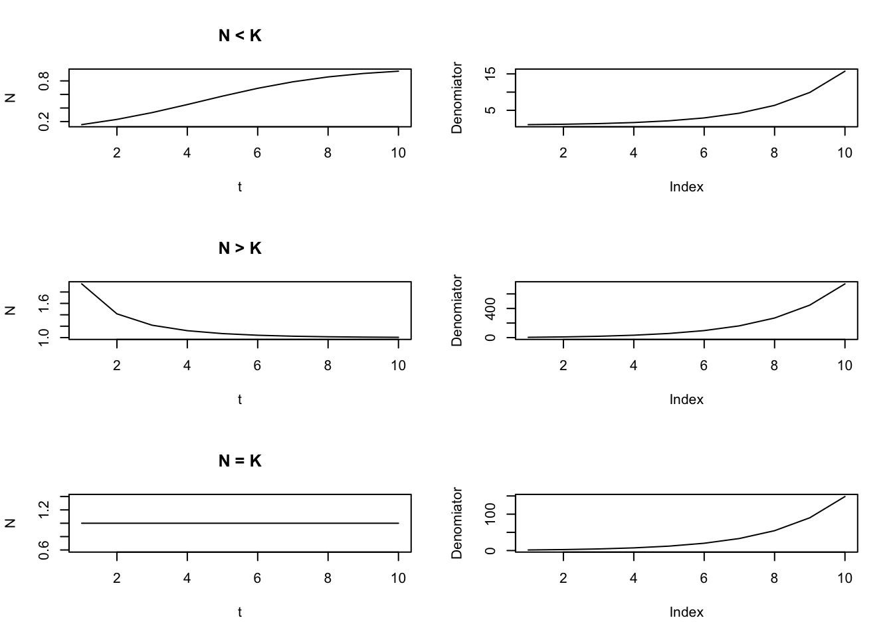
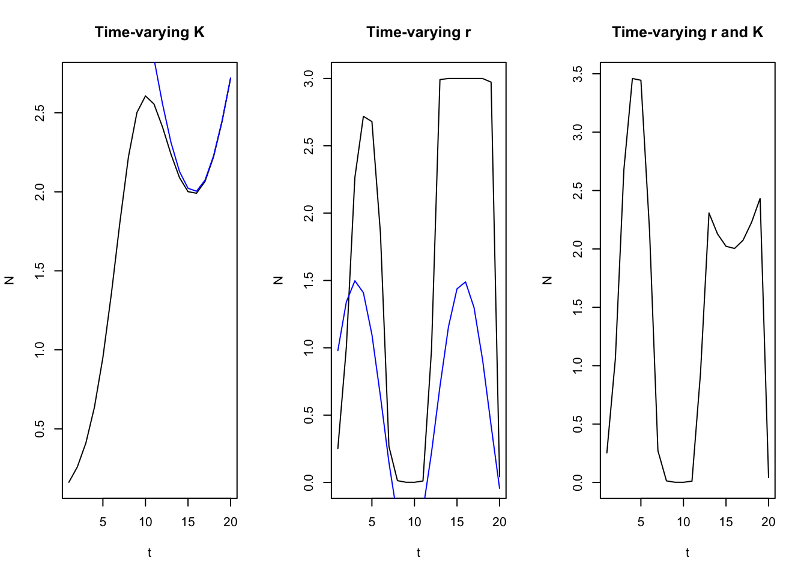

Chapter 1 Quantitative Fish Population Dynaamics Quinn and Deriso (1999)
1.1 Chapter 1 (Population Growth, Mortality, and the Fishing Process)
1.1.1 Geometric and Exponential Growth
Representing changes in populations can be done in two ways: 1) time-discrete functions (difference equations), and 2) continuous functions (differential equations). Additionally, changes in population growth here are represented as either geometric or exponential. These population models presented below refer to the geometric and exponential laws of growth.
A common assumption in the difference equation setting is that population growth or decline changes as a constant ratio from one point to the next:
\[\begin{equation} N_{t+1} = N_tR \\ N_{t+1}/N_t = R \\ N_{t} = N_0R^t \end{equation}\]
where R represents a common multiple or ratio of change, and is also commonly reffered to as the Malthusian parameter. When R < 0, the population declines geometrically to 0, and when R > 1, the population increases geometrically without bound. The difference between geometric and exponential (differential) changes lies in the fact that geometric changes are discrete (multiplied by a constant factor), whereas exponential changes are continuous and instantaneous (multiplied by a constant percentage).
R_0.5 <- 0.5 # Constant ratio of growth
R_1.5 <- 1.5 # Constant ratio of growth
t <- seq(1,10,1) # time index
N <- 1 # Numbers in time 1
par(mfrow = c(1,2))
plot(N*R_0.5^t, xlab = "Age", ylab = "N", main = "R = 0.5", type = "l")
plot(N*R_1.5^t, xlab = "Age", ylab = "N", main = "R = 1.5", type = "l")
For a geometric population growth model, the change in the population is given by:
\[\begin{equation} \Delta N_t = N_{t+1} - N_{t}\\ \Delta N_t = N_{t}R - N_{t} = (R-1)N_{t} \end{equation}\]
and so the per-capita rate of change is:
\[\begin{equation} \Delta N_t / N_{t} = R-1 \end{equation}\]
In the differential equation setting, where changes are instantaneous instead of discrete, we can rewrite the equations above as:
\[\begin{equation} \Delta N_{t+h} = N_0R^{t+h} = N_tR^h \\ \frac{\Delta N_t}{\Delta t} = \frac{ N_{t+h} - N_{t}}{(t+h) - t} = N_t\frac{R^h-1}{h} \end{equation}\]
which yields the following after using lHoptial’s Rule:
\[\begin{equation} \frac{dN(t)}{dt} = rN(t) \\ \int_{N_0}^{N} \frac{1}{N(t)} dN(t) = \int rdt \\ logN - logN_0 = rt \\ logN = logN_0 + rt\\ N_t = N_0e^{rt} \end{equation}\]
R_0.5 <- -0.5 # instantaneous rate of growth
R_1.5 <- 1.5 # instantaneous rate of growth
t <- seq(1,10,1) # time index
N <- 1 # Numbers in time 1
par(mfrow = c(1,2))
plot(N*exp(R_0.5*t), xlab = "Age", ylab = "N", main = "r = -0.5", type = "l")
plot(N*exp(R_1.5*t), xlab = "Age", ylab = "N", main = "r = 1.5", type = "l")
For both the difference and differential equation representation, the change in abundance is directly proportional to its previous abundance. Similarly, r the parameter that describes instantaneous growth demonstrates a population that declines exponentially if r < 0, and increases exponentially when r > 0.
1.1.1.1 Cell Division Example 1.4
N0 <- 1 # start numbers
R <- log(2) # change in growth
t <- seq(1,6, 0.1) # time sequence
par(mfrow = c(1,1))
plot(t, N0 * exp(R * t), type = "l", xlab = "t", ylab = "N")
abline(v = 4)
abline(v = 4.5)
abline(v = 5)
The example above showcases the danger of using a continuous model to calculate changes in populations when the model is actually a discrete time index. i.e., the abundance is different for time 4.5, compared to time 4 or time 5. An additional deficiency to some of these models is that it assumes growth in the population occurs without any bound (i.e., no carrying capacity).
1.1.2 Logistic Model
- Population growth cannot increase without bounds, because it is mediated by density dependent factors (e.g., food diseases, space limitations, and competition) can lead to changes in K (carrying capacity). As the population approaches K, your change in growth should begin to slow down.
The logistic model is given below by including a linear modifying factor (1 - N/K) to reduce growth rates as N approaches K:
\[\begin{equation} \frac{dN}{dt} = rN(1-\frac{N}{k}) \\ N_t = \frac{N_0e^{rt}}{1 - \frac{N_0}{K} + \frac{N_0}{K}e^{rt}} \end{equation}\]
where the denominator of the second equation is a dampening factor to make sure the numerator doesn’t increase without bound. As you can see in the plot below, as N0 approaches K, the denominator gets larger, which reduces the change in the numerator such that is dampens it and is unable to increase without bound. When N > K, it decreases exponentially, and when N = K, growth is constant. When N < K, it increases sigmoidally. The differential equation is pretty easy to solve, but involves some annoying algebra to rearrange and calculate partial fractions for the N and r terms.
N01 <- 0.1 # start N
N02 <- 5 # start N
N03 <- 1 # start N
r <- 0.5 # rate of growth
K <- 1 # carrying capacity
t <- seq(1, 10, 1) # time index
par(mfrow = c(3,2))
plot(t, N01 * exp(r * t) / (1 - (N01/K) + (N01/K * exp(r*t))), type = "l", ylab = "N", main = "N < K")
plot((1 - N01/K + N01/K * exp(r*t)), type = "l", ylab = "Denomiator")
plot(t, N02 * exp(r * t) / (1 - (N02/K) + (N02/K * exp(r*t))), type = "l", ylab = "N", main = "N > K")
plot((1 - N02/K + N02/K * exp(r*t)), type = "l", ylab = "Denomiator")
plot(t, N03 * exp(r * t) / (1 - (N03/K) + (N03/K * exp(r*t))), type = "l", ylab = "N", main = "N = K")
plot((1 - N03/K + N03/K * exp(r*t)), type = "l", ylab = "Denomiator")
1.1.3 Time-varying parameters
- Logistic growth model and the r and K parameters do not necessarily have to be constant, but instead can vary as a function of time. This can happen if let’s say productivity of the population changes via a regime shift, or if there is a competitor has been removed from the population so as to free up resources available to the species of interest. (Reference page 7 for derivation).
- In general, the effect of r is greatest when populations are small, and the effect of K is greatest when the population is big. Furthermore, the change in population tends to be weighted more heavily towards the most recent K - given that the integral of Eq. 1.15 is the weighted harmonic mean of previous carrying capacities (I don’t really get that part…)
N01 <- 0.1
t <- seq(1, 20, 1) # time index
r_constant <- 0.5 # constant rate of growth
r <- sin(0.5 * t) + 0.5 # rate of growth
K <- sin(0.3*t) + 3 # carrying capacity
K_constant <- 3 # constant K
par(mfrow = c(1,3))
plot(t, N01 * exp(r_constant * t) / (1 - (N01/K) + (N01/K * exp(r_constant*t))), type = "l", ylab = "N", main = "Time-varying K")
lines(t, K, col = "blue")
plot(t, N01 * exp(r * t) / (1 - (N01/K_constant) + (N01/K_constant * exp(r*t))), type = "l", ylab = "N", main = "Time-varying r")
lines(t, r, type = "l", col = "blue")
plot(t, N01 * exp(r * t) / (1 - (N01/K) + (N01/K * exp(r*t))), type = "l", ylab = "N", main = "Time-varying r and K")
1.1.4 Multi-species extensions (Page 9)
Multi-species extensions of the logistic growth model is needed because species can compete for the same resources, which can lead to decreasing population growth with increasing population sizes when multiple species interact - as is the case for many populations. However, this can also include both positive and negative relationships (parasite-host, mutualism, protocooperation, etc). In the extensions of multi-species models for logistic growth, the impact of competition is primarily to lower the equilibrium abundance of carrying capacity of the other species (makes sense because there are less resources for them in equilibrium).
In general, these models are seldom used for management, but are generally used for exploring hypotheses about species interactions, ecosystem information about bioenergetics and food habits, etc. They’re hard to parameterize because species interactions are highly variable, different response functions among species, and probably confounding with other variables. All of this leads to poor prediction.
1.1.5 Theory of Mortality
- Key principle: The abundance of an age-class decreases as it ages because of mortality. The following equation is commonly used in modern day stock assessments:
\[\begin{equation} \frac{dN}{dt} = -ZN \\ \int_{N_0}^{N_t} \frac{1}{N} dN = \int -Zdt \\ logN_t - logN_0 = -Zt \\ N_t = N_0e^{-Zt} \end{equation}\]
where abundance decreases exponentially as a function of time, which is modified by -Z (our natural + fishing mortality term). Hence, \(e^{-Z}\) denotes our survival fraction of the population (e.g., fraction of \(N_0\) that survives). Since this is a fraction (i.e., maxes out at 1), then the number of individuals that die are \(1 - e^{-Z}\), which represents our annual death fraction. To observe the entire cohort:
\[\begin{equation} N_t = N_{t-1}S{t-1} = N_0\prod_{x = 0}^{t - 1}S_t = N_0e^{-\sum_{x = 0}^{t - 1}Z} \end{equation}\]
where to get instantaneous survival up to certain point, its multiplicative, while to get instantaneous mortality, its additive. Additionally, these equations can be applied to find abundance during fractions of years, which can be useful for pulse fisheries (e.g., salmon fisheries), surveys, or tagging experiments:
\[\begin{equation} N_{t+\tau} = N_te^{-Z_t\tau} \end{equation}\]
where \(\tau\) represents the fraction of the year and partitions out Z to be a fraction.
1.1.6 Theory of Fishing
- Total mortality is decomposed into natural mortality and fishing mortality, both of which are commonly represented as instantaneous rates. Thus Z = F+M and the resultant population dynamics would look like:
\[\begin{equation} \frac{dN}{dt} = -FN - MN = -(F + M)N \\ N_t = N_0e^{-Z_t} = N_0e^{-(F+M)t} \end{equation}\]
Thus, catch (C) is then composed of:
\[\begin{equation} \frac{dC}{dt} = -FN \\ \end{equation}\]
and natural deaths are composed of:
\[\begin{equation} \frac{dD}{dt} = -MN \\ \end{equation}\]
To derive Baranov’s catch equation, we can integrate the catch equation in differential form:
\[\begin{equation} dC = -FNdt \\ \int_0^C dc = \int_0^\tau -FNdt \\ C = \int_0^\tau -FNdt \\ \end{equation}\]
Solving for \(\int_0^\tau -FNdt\) we get:
\[\begin{equation} \int_0^\tau FNdt = \int_0^\tau -FN_0e^{-Zt}dt \\ = -FN_0 \int_0^\tau e^{-Zt}dt \\ = -FN_0 \int_0^\tau e^{-Zt}dt \\ = -FN_0 [-\frac{1}{Z} (e^{-Zt}-e^0)] \\ = -FN_0 [-\frac{1}{Z}e^{-Zt}+\frac{1}{Z}e^0)] \\ = FN_0 [\frac{1}{Z} - \frac{1}{Z}e^{-Zt}] \\ = \frac{F}{Z}N_0(1-e^{-Zt}) \end{equation}\]
where \(\frac{F}{Z}\) represents the fraction of deaths due to fishing relative to the total mortality and \((1-e^{-Zt})\) denotes the annual death fraction. It is then easy to show that the fraction of deaths due to natural mortality is \(\frac{M}{Z}\). In general, the assumption is that catch is proportional to the instantaneous fishing mortality and its average abundance (\(N_0(1-e^{-Zt})/Zt\)) across the interval of fishing \(C = FN\). Differential formulation of these equations are inappropriate when we have pulse fishing or removals occuring over a short interval. In these circumstances, we need to rewrite catch or abudance as:
\[\begin{equation} N_t = N_0e^{-Zt} \end{equation}\] where t is up to the middle of the year (e.g., 0.4999) or some other approximation, \[\begin{equation} N_t = N_0e^{-Zt} - C\\ \end{equation}\] where C is catch and t = 0.5, which denotes the middle of the year, and \[\begin{equation} N_t = [N_0e^{-\frac{1}{2}Zt} - C]e^{-M(t-\frac{1}{2})}\\ \end{equation}\]
where t is now equal to 1 and we are simply incorporating only natural mortality in the latter half of the year.
1.1.7 Stochastic Theory of Fishing
- Rarely is it the case that we have deterministic fishing - i.e., F does not vary nor does M. We can use statistical methods to incorporate stochasticity into the fishing process, although there are some key assumptions: 1) no immigration, recruitment, or emigration from the population.
The probability of capturing an individual of a given age then follows a multinomial distribution where the probability of capturing an individual is: \[\begin{equation} p_j = \int_{t_j}^{t_j+1}F_tr_tdt \\ \end{equation}\]
where \(p_j\) is the probability an individual is captured, \(F_t\) is the fishing mortality at time t, and \(r_t\) is the probability and individual survives, and is a function of fishing and natural mortality (integrate over an interval to get it). Given this, the probability of not capturing an individual is therefore \(q = 1 - p_j\). So for a given cohort, the catch distribution can be assumed to follow a multinomial distribution, where the expectation and variances are simply derived from the binomial (multinomial individual components are binomially distributed) (e.g., \(E(C_j) = N_0p_j, V(C_j) = N_0p_j(1-p_j)\)). Following a similar fashion, the probability of selecting N individuals (the random variable) from a cohort then follows a binomial distribution with probability equal to \(r_t\) (individuals survive) and the total number of samples taken equalling to \(N_0\) (initial abundance). Thus, these equations allow for stochasticity in both catch and abundance and are random variables that are governed by some statistical distribution with a set sample space (e.g., binomial, multinomial). Allowing for stochastic theory here therefore allows us to figure out what the variances and uncertainty of our population estimates are.
1.1.8 CPUE and Fishing Process
- Catch is the product of both fishing mortality and the abundance of the population \(C = FN\), therefore, changes in catch equals changes in either fishing mortality or abundance and are confounded if you want to interpret changes in abundance. Effort data is needed to better parse out whether catch is changing (fluctuations in catch) due to F or N.
To derive CPUE, fishing effort is assumed to be independent and additive. Then, the change in catch is proportion to fishing effort per unit time and abundance:
\[\begin{equation} \frac{dC}{dt} = q\frac{dE}{dt}N \\ \frac{dC}{dt} = FN \\ FN = q\frac{dE}{dt}N \\ F = q\frac{dE}{dt}\\ Fdt = qdE \\ \int Fdt = q\int dE \\ Ft = qE \end{equation}\]
where q is the catchability coefficient - denoting the fraction of N individuals captured per unit effort. If q remains constant, then a higher effort equates to a higher fishing mortality rate. If q changes (which can reflect improvements in fishing gear, targeting practices, expansion into other areas, etc.) the fishing mortality can also get modified. So if catch is proportional to FN, then rewriting \(C = FN\) yields:
\[\begin{equation} C = FN \\ C = qEN \\ \frac{C}{E} = qN \end{equation}\]
where catch-per-unit effort can be assumed to be proportional to changes in abundance, if q is constant over time (rarely the case). Even if q is not known, you can still use CPUE to figure out relative changes in abundance. If q is known, you can simply divide CPUE by q to get N. If information about area swept or effective fishing area is known, you can extrapolate out to the total area sampled to get total abundance as well:
\[\begin{equation} N = \frac{A}{a}C \end{equation}\]
where \(A\) is the total area, and \(a\) is the sample area (i.e., if your total area is the sampled area, then catch = abundance). In relation to CPUE data, if the density of fish is \(D = N/A\) and assuming that area swept is proportional to fishing effort (\(a = qE\)), then \(N = \frac{A}{a}C\) becomes the following after some rearranging:
\[\begin{equation} N = \frac{A}{a}C \\ N = \frac{A}{qE}C \\ \frac{N}{qE} = AC\\ NqE = AC \\ \frac{N}{A}q = \frac{C}{E} \\ qD = \frac{C}{E} \end{equation}\]
and the changes in population density are therefore proportional to changes in CPUE, assuming that area swept is proportional to fishing effort (i.e., if area swept increases, then fishing effort increases as well).
1.1.8.1 Regional considerations of CPUE data
- In some cases, we might want to compare CPUE data among regions. If certain areas fished (i.e., management areas) have different CPUEs, the interpreation of relative abundance can depend on the space of that area. For example, if you fish in a small area and you have the same CPUE as a large area, that implies that the small area has a larger density of fish than the large area.
Area-specific CPUE is a simple extension of previosu equations: \[\begin{equation} \frac{C_r}{E_r} = q\frac{N_r}{A_r} = qD_r \\ \end{equation}\]
where the subscript \(r\) denotes region. To get the total abundance \(N\), its simply a sum of the densities extrapolated to the total area where one just has to cancel out the denominator of area in the density calculations:
\[\begin{equation} N = \sum_rN_r = \sum_r A_rD_r \\ N = \sum_r A_r\frac{N_r}{A_r} \\ \end{equation}\]
These equations suggest that when using CPUE data to interpret overall population trends, we need to weight the CPUE data by the area. Taking a simple sum without weighting by area can lead to spurious conclusions about population trends (i.e., because the densities by area are different).
Generally speaking, CPUE data are usually higher densities than the entire population because harvesters typically fish in areas with high densities of fish. But if we are comparing apples to apples (e.g., same areas over time), then we can still track the change in abundance in these specific areas fairly accurately. But this techincally assumes that the population is immobile if we were to interpret changes in CPUE this way. For example, if the population contracts to the fishing grounds fished, a change in CPUE in that area does not necessarily reflect a change in the ovearll abundance. This is important for surveys and CPUE standardization because we need to be surveying both areas of high abundance and low abundance, to ensure that contraction or expansion of the population isn’t a big issue. Increases in CPUE by expanding into other fishing grounds can also occur, and care is needed when interpreting naive CPUE metrics without standardization methods.
The naive use of CPUE data should be cautioned against e.g.,: \(\frac{C}{E} = \frac{\sum_rC_r}{\sum_rE_r}\) because you are not weighting the effort appropriately. Essentially, what happens here is that CPUE is now weighted by effort - this is only valid when fishing is uniformly distributed in relation to fish habitat (i.e., random sampling).
1.1.8.2 CPUE standardization and selectivity
- The use of CPUE is centered on the fact that q is constant across space and time, etc. However, q can change from vessel to vessel, areas, and time, because of differences in soak time, use of different gear, new advances, etc. Thus, to correctly interpret CPUE data, q needs to be corrected for such that it remains constant. For example, if q increases, while the abundance decreases, you CPUE can still be increasing - which leads to hyperstability.
1.1.8.2.1 Standardization
- Two general approaches: 1) standardized by fishing power coefficients (less done now that we have computational tools, and also more expensive), and 2) using statistical models (e.g., GLM, GAMs, VAST).
For the first approach, its bascially a gear calibration study where you compare gears side by side fishing at the same time, area, etc and you get the CPUE from each gear type. If you have gear \(i\) and gear \(j\), this would just be:
\[\begin{equation} FishingPower_i = \frac{U_i}{U_j} \end{equation}\]
where \(U\) is CPUE and FishingPower reflects the ratio of CPUEs. If gear \(i\) is better at catching fish per unit of effort, then \(FishingPower_i > 1\), vice versa. Effective effort can then be calculated as \(EffE_i = FishingPower_iE_i\), which is then used as to calculate CPUE \(\frac{C_i}{EffE_i}\) to make them comparable among gears or areas, etc.
The second approach is to use some form of a linear model to estimate fishing power coefficients - which are the parameters of the model. Effective effort can then be estimated by multiplying the fishing power coefficients by the observed effort. The total effective effort would then be summed across the reference effort level and the effective effort and the standardized CPUE would be calculated by summing catch across the levels (without any modification) and dividing by the effective effort, giving us our CPUE trend. Note that model-based methods will change in terms of the CPUE trend obtained as you continue to add new data.
1.1.8.2.2 Selectivity
- Selectivity refers to catching fish of particular size or age ranges. Gear selectivity is a function of fishing mortality and catchability. Thus, changes in catchability is a special case of changes in selectivity (potentially confounded in assessment applications).
The fishing mortality for a given category \(x\) is then:
\[\begin{equation} F_x = s_xF \\ F_x = s_xqE \\ q_x = s_xq \end{equation}\]
where \(s_x\) is the selectivity for a given category, and catchability can be calculated for a given category (e.g., proportion of the stock of category x caught with one unit of effort). Furthermore, CPUE is then not a reflection of the overall stock, but rather the component of the stock that is selected by the fishery (e.g., the exploitable population):
\[\begin{equation} \frac{C_x}{E_x} = qs_xN_x \end{equation}\]
Using the same ideas as fishing power coefficients, if the average abundance doesn’t change substantially (e.g., survey) such as to impact CPUE (because you can cancel out the N), then you can compare the CPUE specific to category x to understand the relative catchability between two different gears:
\[\begin{equation} \frac{U_{x1}}{U_{x2}} = \frac{q_1s_{x1}N_x}{q_2s_{x2}N_x} = \frac{q_1s_{x1}}{q_2s_{x2}}\\ \end{equation}\]
where \(1\) and \(2\) refer to the different gears. As you can see above, selectivity and catchability are confounded and you can only compare the relative selectivities between the two different gear types (because q cannot easily be distinguished). In the context of an assessment, it really shows the importance of getting q correct/constant and standardizing the CPUE such that information from selectivity can be attributed to the selectivity process rather than the catchability process. In general, the comparison between gear selectivities are a special case of CPUE standardization - i.e., comparing the fishing power coefficients and making them relative to some reference gear.
CPUE standardization and investigation of gear selectivities can be investigated jointly. One approach would be to construct age or length specific CPUE, the other approach would be to add in these bins as a factor in a linear model, and look at how CPUE changes as a function of bins.
1.1.8.2.3 Sampling CPUE data
Assuming that CPUE is collected with random sampling, the variance of catch sampled is proportional to fishing effort (i.e., more samples and more effort = lower variance; see Eq. 1.46 and 1.47). Subsequent calculations for the variance of effort and CPUE can be found in pages 26 - 27, and simply follows the linear properties of variances using their expected values.
1.1.8.2.4 More Complex Models for CPUE
As noted above, catchability might not be constant due to a variety of factors, and might not be linearly related to abundance. Several models can be constructed and one such model raises effort and abundance to estimated parameters to get non-linear relationships:
\[\begin{equation} C = qE^{\alpha + 1} N^{\beta + 1} \\ C = qE^\alpha E N^\beta N \\ \frac{C}{E} = (qE^\alpha N^\beta) N \end{equation}\]
where \(\alpha\) and \(\beta\) are power functions such that \(q\) is linearly related to power functions of effort and abundance. The following relationships can be derived by changing \(\beta\) and is what we come to know as hyperstability and hyperdepletion. Holding \(\alpha\) constant and varying \(\beta\), we see that when \(\beta = 0\), abundance is just raised to the power of 1 (i.e., proportional relationship between CPUE and N), when \(\beta > 0\), then abundance is raised to the power of something greater than 1, resulting in an exponential relationship (hyperdepletion, where CPUE increases less quickly than abundance). Conversely, when \(-1 < \beta < 0\) such that N is raised to the power of something less than 1, the relationship between CPUE resembles more of an asymptotic curve (hyperstability, where CPUE increases quicker than abundance).
Under hyperstability, a population is fished down more rapidly than indicated by CPUE because you have the illusion of plenty - i.e., CPUE is increasing, but stock is actually smaller. Under hyperdepleted scenarios, a population is not declining as quickly as the trend suggests (i.e., illusion of little). Hyperstability can be caused by contraction of a stock (i.e., cod), increasing fishing power, targetting fish preferred habitats, subsetting data to only look at certain vessels, areas, etc. Hyperdepletion can be caused by depleting a stock in a localized area, but not expanding to other areas where abundance is high (e.g., only considering areas that were fished) (see Walters 2003 as well).
q <- 1 # catchability
N <- seq(1, 10, 1) # abundance
E <- 3 # effort
alpha <- 0 # alpha for effort
beta_1 <- 0 # beta for abundance (proportional)
beta_2 <- 0.8 # beta for abundance (hyperdepletion)
beta_3 <- -0.3 # beta for abundance (hyperstable)
CPUE_prop <- (q * E^(alpha) * N^(beta_1)) * N
CPUE_prop <- CPUE_prop / mean(CPUE_prop)
CPUE_hd <- (q * E^(alpha) * N^(beta_2)) * N
CPUE_hd <- CPUE_hd / mean(CPUE_hd)
CPUE_hs <- (q * E^(alpha) * N^(beta_3)) * N
CPUE_hs <- CPUE_hs / mean(CPUE_hs)
plot(N, CPUE_prop, ylab = "CPUE", xlab = "N", type = "l", lwd = 5)
lines(N,CPUE_hd, ylab = "CPUE", xlab = "N", type = "l", col = "red", lwd = 5)
lines(N, CPUE_hs, ylab = "CPUE", xlab = "N", type = "l", col = "blue", lwd = 5)In the case where \(\alpha\) changes, it changes the relationship between fishing mortality and effort. Recall that \(F = qE\). Thus, F no longer changes linearly with effort. Similar to the relationship between hyperstability and hyperdepletion, when \(\alpha = 0\), the relationship between F and effort is linear, when \(-1 < \alpha < 0\) more effort leads to what we term as gear saturation (more effort = less incremental catch), and when \(\alpha > 0\), it leads to what we term as gear synergy (more effort = more incremental catch). Other extensions of these models (accounting for non-linear relationships between F and effort and abundance and CPUE) are similar and more flexible options are available (see page 29).
1.1.8.2.5 Statistical models for CPUE
To fit statistical models for CPUE (using the more “complex” models described above), one needs to figure out what distribution to use to adequately characterize the uncertainty in CPUE predictions. Back in the day, we would do a bunch of different transformations (e.g., log, Box-Cox) and use Poisson approximations to fit models to CPUE data, likely given computational demands. However, in the modern day, we are now able to use more complex statistical distributions (e.g., Tweedie, negative-binomial) to fit to CPUE data. The book gives a full detailed explanation taking you step-by-step how the MLE process is done, as well as getting the mean and variances using mgf and integration methods, and the delta method (pages 31 - 33).
There are couple ways to obtain confidence intervals for the median of CPUE, which include: 1) the delta method as mentioned above \(\sqrt n (g(X_n) - g(\mu)) \xrightarrow{D} N(0,\sigma_\mu^2 g^`(\mu)^2)\), 2) likelihood profiles, 3) reparameterize the model so that you are estimating the median instead of the mean, 3) brute-force methods (e.g., bootstrapping, MCMC).
1.1.8.3 Other considerations w/ CPUE data (Schooling, Searching)
There are several considerations that need to be accounted for when using CPUE data. Under a scenario where we are using passive fishing gear (e.g., hook and line w/ bait) where fish are attracted to bait, there is a potential for increased variance in your catch because of aggregations (i.e., sampling is not representative of the entire population or similar to clustering issues - need to account for covariances in variance calculations). No bias is expected to occur unless when there is severe competition for bait (e.g., hook competition) or the fishery is in areas of high abundance.
In terms of active searching gear, there are some other implications that need to be considered, particularly when fishing for schooling species. The book gives an example where if a sampling process is random and a small fraction of the school is taken, the number of schools stays the same, but the population goes down. In this case, using encounter non-encounter data (i.e., binomial likelihood) would give us an index on the number of schools in the population, but not the overall population (i.e., more encounters = more schools). The other issue the book points out is that if catch per unit effort is used, and the catch of the school remains constant per unit effort, your average CPUE will remain the same, but abundance declines, which might not be reflected in your data (I don’t really get this point…). Nonetheless, the general consensus is that using CPUE for schooling fish can be tricky.
Some models have been developed to estimate the encounter rates as a function of predator search and handling time (Michaelis-Menten equation):
\[\begin{equation} n = a\tau_sD = a(\tau_t - n\tau_h)D \\ n = \frac{a\tau_sD}{1 + a\tau_hD} \end{equation}\]
where a is a search rate (area searched per unit time), \(\tau_s\) is time spent searching by a predator, \(\tau_t = \tau_s + n\tau_h\) is the total time available for searching \(\tau_h\) is handling time, D is density and n = encounter rate. Encounter rates (n) increases with increased densities, but levels off (asymptotes) because of partitioning between search and handling time (i.e.., \(\tau_t\) is partitioned between search (\(\tau_s\)) and total handling time (\(n\tau_h\)) when there are a lot of encounters). In a schooling species, we can use this equation and relate CPUE as density (encounter/search time). Generally, the relationship begins to asymptote because the amount of time
Given the equation above, reducing \(\tau_s\) reduces the maximum number of schools encountered (because its in the numerator), changing \(\tau_s\) therefore changes the scale of the relationship.
a = 0.3 # search rate
tau_s = seq(0.1, 1, 0.1) # search per unit time
tau_h = 1 # handling per unit time
D = seq(1, 1e3, 1) / 30 # density
col = viridis::viridis(n = length(tau_s))
for(i in 1:length(tau_s)) {
if(i == 1) plot(D, (a * tau_s[i] * D) / (1 + (a * tau_h * D)), lwd = 5, col = col[i], ylim = c(0,1),
xlab = "Density", ylab = "Schools encountered", main = "Changing search time")
else lines(D, (a * tau_s[i] * D) / (1 + (a * tau_h * D)), lwd = 5, col = col[i])
}
while changing \(\tau_h\) similarly has an effect on the overall scale of the curve - where increasing \(\tau_h\) reduces the number of schools encountered, because the predator partitions out time to handle prey.
a = 0.3 # search rate
tau_h = seq(0.1, 1, 0.1) # handling per unit time
tau_s = 1 # search per unit time
D = seq(1, 1e3, 1) / 30 # density
col = viridis::viridis(n = length(tau_h))
for(i in 1:length(tau_h)) {
if(i == 1) plot(D, (a * tau_s * D) / (1 + (a * tau_h[i] * D)), lwd = 5, col = col[i], ylim = c(0,5),
xlab = "Density", ylab = "Schools encountered", main = "Changing handling time")
else lines(D, (a * tau_s * D) / (1 + (a * tau_h[i] * D)), lwd = 5, col = col[i])
}
1.1.8.4 Line Transect Model (Schooling Populations)
Some other extensions of this model provided by the book uses line transect theory, where the total number of schools encountered is the ratio of effective area search and the total area occupied by the population, multiplied by the number of schools:
\[\begin{equation} E(n_t) = \frac{2L_tc(S_t)}{A}N_t \\ c(S_t) = a + bln(S_t) \end{equation}\]
where \(n_t\) is the number of schools encountered, \(L_t\) is the length of the search along a transect, \(c(S_t)\) is the effective width of search along the transect, \(S_t\) is the size of the school, and \(N_t\) are the number of schools in the population. Presumably, the 2 refers to both sides of the transect? Regardless, this shows that the number of schools encountered is equal to the ratio of searched area and total area multiplied by the total schools. The effective width searched is then some function of the average size of the school. In this model, mortality is additionally included:
\[\begin{equation} C_t = \overline{C}n_t \end{equation}\]
where \(\overline{C}\) can be assumed to be a fixed number of fish killed per school (i.e., for each school encountered, a fixed number is removed). Additionally, some other extensions could include a fixed proportion of the school:
\[\begin{equation} C_t = p_cS_tn_t \end{equation}\]
where \(p_cS_t = \overline{C}\) and is a proportion of the average size of the school. Then, the number of individuals at each time is:
\[\begin{equation} T{t+1} = T_t - C_t \end{equation}\]
where \(T\) is the total number of individuals. Fragmented schools can also be incorporated via \(N_{t+1} = N_t + (x - 1)n_t\), where each school encountered breaks off into a constant number of schools.
In an example where we have data for number of schools encountered, length of search, and catch from each encounter, then three CPUE measures can be used: 1) schools / length of search, 2) catch / length of search, and 3) catch / school encountered. The expected values of the CPUE measures can easily be derived using the aforementioned equations and rearrange them (see page 39). In general, these relationships (CPUE) show that CPUE is not directly proportional to the abundance of the schools or the average school size, and is often hard to interpret. In reality, you need information on encounter rates, fragmentation rates, school size, etc. to really understand what’s going on with schooling population dynamics. Welp… we went through all these equations, just to find out that none of the CPUE measures above do a great job of describing the population…
1.1.9 Schooling Population Example (Vagaries of CPUE)
N_1 = 100 # number of schools in pop
S_t = 10 # number of individuals per school
T_1 = N_1 * S_t # number of total individuals
A = 100 # total pop area
L_t = 10 # length searched
Cbar = 3 # number of individuals killed per school encountered
x = 2 # school fragment when encountered
a = b = 0.5 # c(St) relationship encounter parameters
cS_t = a + (b * log(S_t) )# effective area searched
t = seq(1, 5, 1) # time
# set up empty vectors
N_vec = vector() # total number of schools
T_vec = vector() # total individuals
n_vec = vector() # schools encountered
C_vec = vector() # catch
nL = vector() # schools encountered / length searched
CL = vector() # catch / length searched
Cn = vector() # catch per number of schools encountered
for(i in 1:length(t)) {
if(i == 1) {
N_vec[i] = N_1 # total schools
T_vec[i] = T_1 # total individuals
} # time i = 1
# population dynamics
n_vec[i] = ((2 * L_t * cS_t) / A) * N_vec[i] # total number of schools encountered
C_vec[i] = Cbar * n_vec[i] # total catch
if(i < length(t))T_vec[i+1] = T_vec[i] - C_vec[i] # total abundance in the next year
if(i < length(t))N_vec[i+1] = N_vec[i] + (x - 1) * n_vec[i] # update to the number of schools after fragmenting
# cpue measures
nL[i] = n_vec[i] / L_t
CL[i] = C_vec[i] / L_t
Cn[i] = C_vec[i] / n_vec[i]
}
# Relationships between Total Schools and Number of individuals
par(mfrow = c(1,1))
plot(N_vec, T_vec, type = "l", lwd = 5, xlab = "Total Schools", ylab = "Total Numbers" )# Relationships between CPUE and population vectors
par(mfrow = c(2,3))
plot(T_vec, nL, type = "l", lwd = 5, xlab = "Total Numbers", ylab = "Schools Encountered / Length searched" )
plot(T_vec, CL, type = "l", lwd = 5, xlab = "Total Numbers", ylab = "Catch / Length searched" )
plot(T_vec, Cn, type = "l", lwd = 5, xlab = "Total Numbers", ylab = "Catch / Schools Encountered" )
plot(N_vec, nL, type = "l", lwd = 5, xlab = "Total Schools", ylab = "Schools Encountered / Length searched" )
plot(N_vec, CL, type = "l", lwd = 5, xlab = "Total Schools", ylab = "Catch / Length searched" )
plot(N_vec, Cn, type = "l", lwd = 5, xlab = "Total Schools", ylab = "Catch / Schools Encountered" )As you can see, an increase in the number of schools does not necessarily reflect an increase in the numbers (because of fragmentation). Catch / number of schools encountered, results in a constant CPUE, while an increase in encounters and catch / length searched reflects a lower population size, and an increase in the aforementioned CPUE measures leads to an increased number of schools detected (but the population size is reduced). So this is all to say its hard to figure out a good index for schooling populations, especially if fragmentation occurs.
1.1.9.1 Effects of Catchability differing between individuals
Catchability can differ between individuals because of learned behaviors (avoidance), propensity to bite hooks, habitat preference of a cohort (e.g., the catchability of a large cohort might increase b/c they’re everywhere, similar to AK sablefish). Nonetheless, during the initial period, the catchability of the cohort will be high, but after removing individuals with high catchability, the ones remaining in the population actually have low catchability.
A possible model for describing the catchability processes above is described below and is conditional on catchability decreasing because of increased effort on the stock (i.e., quickly removing vulnerable individuals first). This can easily be implemented within an assessment model using penalized or state-space approaches:
\[\begin{equation} u(t,q) = 1 - exp(-qE_t) \\ \end{equation}\]
where \(E_t\) is the effort expended and \(u(t,q)\) is the probability of capture (basically the number of fish that died due to fishing because its just \(qE_t = F\)). Hence, the above equation is just our annual death fraction. Thus, the probability an individual survives is \(P(survive|q) = exp(-qE_t)\), which is what we formerly termed as our annual survival fraction.
To get the probability density of \(q\) given that a fish survives, we need to multiply the probability that a fish survives \(exp(-qE_t)\) by the density function of \(q\) given that there is prior fishing, and integrate it to normalize:
\[\begin{equation} f_t(q|fish survives) = \frac{e^{-qE_t}f_t(q|prior fishing)}{\int e^{-xE_t}f_t(x|prior fishing)dx} \end{equation}\]
where the above is just Bayes theorem, and flipping the problem on its head, where we are now focusing on finding \(f_t(q|fish survives)\). As an example, assume that \(f_t(q|prior fishing) \sim N(Q_1, \sigma^2)\), which results in \(f_t(q|fish survives)\) also being normal because of the normal-normal conjugacy. However, using a normal will result in the cohort having a negative catchability. Nonetheless, changes in \(Q_t\) are then modeled as:
\[\begin{equation} Q_t = Q_1 - \sigma^2E_{t-1}^* \end{equation}\]
where \(E_{t-1}^*\) is cumulative effort. Given the above, the mean catchability will update and change and continually decrease at a rate proportional to the fishing effort is expended.
q_1 = 1 # catchability
E = seq(1, 7, 1) # effort expended
cumsum_E = cumsum(E) # cumulative sum of effort to update q
t = seq(1,length(E),1) # time index
sigma_2 = 0.05 # variance of normal
q_t = vector()
# Change in q over time for a cohort after increased expended total effort
par(mfrow = c(1,2))
for(i in t) q_t[i] = q_1 - sigma_2 * cumsum_E[i]
plot(t, q_t, xlab = "t", ylab = "q", main = "Change in q over time after expended effort", lwd = 5, type = "l")
# Change in the pdf of q after expended effort
col = viridis::viridis(n = length(q_t))
curve(dnorm(x, q_t[1], sigma_2), from=-1, to=1, col = col[i], lwd = 5, xlab = "q", ylab = "pdf", main = "Change in pdf of q")
for(i in 2:length(t)) curve(dnorm(x, q_t[i], sigma_2), from=-1, to=1, col = col[i], lwd = 5, xlab = "q", ylab = "pdf", add = TRUE)An extension to this would be to use a gamma pdf instead, to ensure that catchability is always larger than 0, and is never negative:
\[\begin{equation} Q_t = R/\lambda_t \\ V_t(q) = r/\lambda^2_t \\ \lambda_t = \lambda_{t-1} + E_{t-1} \end{equation}\]
where q decreases as lambda increases (denominator gets bigger, but r remains constant). If we have asymptotic selectivity but q decreases over time by age, it can manifest in dome-shaped mortality patterns.
lambda_1 = 1 # lambda to adjust q
q_1 = 1/lambda_1 # catchability
E = seq(1, 7, 1) # effort expended
t = seq(1,length(E),1) # time index
q_t = vector() # q vector
lambda_t = vector() # lambda vector
# initialize
q_t[1] = q_1
lambda_t[1] = lambda_1
# loop through to calculate quantities
for(i in 2:length(t)) {
lambda_t[i] = lambda_t[i - 1] + E[i-1]
q_t[i] = 1/lambda_t[i]
}
# gear selectivity
sel = 1 / (1 + exp(- 5 * (t - 1)))
par(mfrow = c(1,3))
plot(t, q_t, xlab = "t", ylab = "q", main = "Change in q over time after expended effort", lwd = 5, type = "l")
plot(t, sel, xlab = "t", ylab = "Selectivity", main = "Gear Selectivity", lwd = 5, type = "l")
plot(t, q_t * sel, xlab = "t", ylab = "q * Sel", main = "q * Gear Selectivity", lwd = 5, type = "l")
1.1.9.2 Stochastic Fishing Models
Catch rates for a given operation can be highly variable. In fisheries where a lot of vessels operate, the mean aggregate catch rate can be close to the true mean, by the central limit theorem. However, some exceptions exist, especially if vessels do not operate independently (sharing information, non-random sampling, preferential sampling, etc)
1.1.9.2.1 Purse-Seine Model
The purse seine model described in the book predicts catch by using a Markov process (transitions between searching and setting states), and time spent on as give state is a random variable where its distribution is conditional on the state. Setting on a school is governed by a binomial process and the waiting time in between setting is governed by a negative exponential (Laplace) (see page 43 for more details). Catch can then be predicted, conditional on search and set times.
1.1.9.3 Angling Gear Model
This is a similar extension to the purse-seine model but explicitly incorporates components about handling time, attack rates, and in the context of multi-species, incorporates competition/inhibition factors. These models can predict an index of abundance, although the interpretation can be difficult particularly in a multi-species context due to gear/hook competition.
For example, the book gives an example where in a multi-species case (e.g., the AK longline survey), an increase in CPUE of one species over time might not be due to competition necessarily, but can be due to differences in handling time of the angler - i.e., more catch potentially if handling time is low (depth fished for a given species). Similarly, other species can impact the CPUE, where declines in CPUE of other species and increase the CPUE of a species.
1.1.9.4 Longline Model
For a longline survey, the abundance can be nonlinearly related to CPUE, due to gear saturation and competition (inter and intra). Here, the model is similar to the angling gear model where multi-species generalizations can be incorporated. Additionally, components are incorporated to account for removed bait but non-captures. Three probabilities are incorporated: 1) probability a bait is taken, 2) probability species \(i\) attacked a hook, and 3) probability that an attack leads to a fish getting hooked. This whole model is represented using multinomial probabilities of species-specific catch (pages 47 - 49).
More generally, I think a lot of these factors can be incorporated without the use of such an invovled model. In particular, we can incorporated factors from other species in a linear model and standardize CPUE that way.
1.2 Chapter 2 (Stock Productivity and Surplus Production)
The main goal of determining stock productivity is to understand the surplus that can be harvested after accounting for recruitment, mortality, and growth. Here, the subsequent models described are simplistic and make a lot of assumptions - i.e., the stock is an aggregate of a population, and no direct accounting is made of growth, natural mortality, age, structure, recruitment, and species interactions (biomass dynamics models). The book establishes some notation below, which I’m not the biggest fan of, so I’ll make my own simplifications:
\[\begin{equation} B = NW \\ Y = CW \end{equation}\]
where \(B\) is biomass, \(N\) is numbers, \(Y\) and \(C\) are yield and catch, and \(W\) is weight (average). The book defines latent productivity as the instantaneous biomass production when fishing is absent. Latent productivity is a function of biomass alone. Equations are provided below for latent productivity:
\[\begin{equation} P^. = \frac{dP}{dt} = B^. = \frac{dB}{dt} \end{equation}\]
where \(P^.\) and \(B^.\) are instantaneous rates of change for biomass and productivity. As described above, productvitiy is the same as changes in biomass production when fishing is absent. To further partition this out:
\[\begin{equation} P^. = B^. = \frac{dB}{dt} = \frac{dP}{dt} = N\frac{dW}{dt} + \frac{dN}{dt}W \end{equation}\]
where the change in biomass or latent productivity when no fishing is present is composed of \(N\frac{dW}{dt}\) which represents the growth of the population, and \(\frac{dN}{dt}W\) which represents the change in the population (i.e., due to recruitment or mortality). When fishing is present, the instataneous change in biomass is now called “net productivity” rather than latent productivity and is equal to the latent productivity subtracted by the yield:
\[\begin{equation} \frac{dB}{dt} = \frac{dP}{dt} - \frac{dY}{dt} \end{equation}\]
which shows that the change in biomass (net productivity in this case) increases when the latent productivity is larger than the yield. However, when yield is larger than the latent productivity, the net productivity of the population decreases. When biomass does not change, the population is in equilibrium (denoted with *). When a stock is in equilibrium a general relationship can be formulated by setting \(\frac{dB}{dt} = B^. = 0\) (i.e., change in net productivity is at equilibrium), resulting in change in yield and latent productivity equalling each other, where:
\[\begin{equation} \int_0^{Y^*}dY = \int_0^\tau P^.(B^*)dt \\ Y^* = P^.(B^*) \tau \\ \frac{Y^*}{\tau} = P^.(B^*) \end{equation}\]
where the last part of the equation tells us if our model is an annual time step, we can harvest the population at a rate of \(\frac{Y^*}{\tau}\) to keep the population in equilibrium without driving the stock above or below its current level. Yield generally has the relationship of:
\[\begin{equation} \frac{dY}{dt} = F_tB_t \end{equation}\]
where \(F_t\) is the fishing mortality rate. The equilibrium yield can then be solved for by replacing \(F_t\) with \(F^*\) if biomass is at an equilibrium:
\[\begin{equation} Y^*/\tau = F^*B^* \\ F^* = Y^*/\tau/B^* = P(B^*)/B^* \\ \end{equation}\]
if fishing mortality is \(F = qE\), then we can also similarly solve for equilibrium effort. Thus, solving for these equilibrium quantities allows us to solve for effort or fishing mortality rates that would result in equilibrium yield - i.e., how much can we remove from the population without depleting it. These models also often have a carrying capacity parameter (\(B_\infty\)), where when no fishing occurs, it converges toward this value.
1.2.1 Graham-Schaefer Model
This model is our typical parabolic curve, where the midpoint is where our productivity is maximized. In general, we will use the Fletcher formulation of this:
\[\begin{equation} P(B^.) = \frac{4m}{B_\infty} (1 -\frac{B}{B_\infty}) B \end{equation}\]
To solve for equilibrium conditions and solve for where maximum productivity occurs, we need to set this equation to 0: \[\begin{equation} P(B^.) = \frac{4m}{B_\infty} (1 -\frac{B}{B_\infty}) B = 0 \end{equation}\]
although the equation has two solutions, 1) when \(B = 0\) and 2) when \(B = B_\infty\) because of \((1 -\frac{B}{B_\infty})\). To understand the regions in which equilibrium occurs, i.e., where productivity does not change (\(\frac{dP^.}{dB} = 0\)). To understand where productivity is maximized, solve for:
\[\begin{equation} \frac{dP^.}{dB} = \frac{4m}{B_\infty} - \frac{8mB}{B^2_\infty} = 0 \\ B_m = \frac{B_\infty}{2} \end{equation}\]
where \(B_m\) is the biomass at which productivity is maximized and the population is at equilibrium. Maximum productivity of this stock can then be solved for by replacing \(B_m\) into the Fletcher equation and yields \(m\).
When fishing occurs in the population, the change is biomass is then defined as:
\[\begin{equation} \frac{dB}{dt} = \frac{4m}{B_\infty} (1 -\frac{B}{B_\infty}) B - F_tB \end{equation}\]
and under equilibrium conditions, substituting \(F^*\) into the above equation and setting the equation to 0, we find the relationship that equilibrium biomass is therefore \(B^* = B_\infty - \frac{B^2_\infty }{4m}F^*\) where the equilibrium carrying capacity is simply adjusted by equilibrium fishing mortality (linear relationship) - i.e., it doesn’t reach as large of a population size under conditions without fishing.
The figure below shows the relationship between equilibrium F and biomass - i.e., adjusting the carrying capacity term down when fishing is present.
m = 25 # maximum productivity
B_inf = 100 # K of biomass
eq_F = seq(0.01, 1, 0.1) # fishing mortality
B_star = B_inf - (B_inf^2/(4*m))*eq_F
plot(eq_F,B_star, xlab = "F", ylab = "B", lwd = 5, type = "l",
main = "Relationship between equilibrium Biomass and F")
Equilibrium yield can simply be calculated by replacing \(B\) with \(B^*\): \[\begin{equation} Y^* = \frac{4m}{B_\infty} (1 -\frac{B^*}{B_\infty}) B^* \\ Y^* = F^*B^* = qE^*B^* \\ \end{equation}\]
To collate everything together, the points at which yield/productivity is maximized are: \[\begin{equation} B_m = B_\infty / 2 \\ F_m = 2m / B_\infty \\ E_m = 2m / qB_\infty \end{equation}\]
because of the relationship between yield and latent productivity \(Y_m = P(B_m) = m\) and the relationship between yield, biomass, and fishing mortality where \(Y = FB = qEB\)
The figures below illustrates the behavior of equilibrium F, effort, yield, and biomass. All these relationships are parabolic and the maximum productivity occurs in the middle of the curve. Note that these are not rates of change.
m = 25 # maximum productivity
B_inf = 100 # K of biomass
B = seq(0, 100) # sequence of B
q = 0.03 # catchability (for effort paramterization)
eq_F = seq(0.01, 4*m/B_inf, length.out = length(B)) # fishing mortality
eq_E = eq_F / q # equilibrium effort
Yield = (((4 * m )/ B_inf )* (1 - (B / B_inf)) * B) # yield
Yield_wF = B_inf * eq_F - ((B_inf^2) / (4*m)) * eq_F^2 # yield with F
Yield_wE = B_inf * q*eq_E - ((B_inf^2) / (4*m)) * (q*eq_E)^2 # yield with effort
par(mfrow = c(1,3))
plot(B, Yield, type = "l", lwd = 5, xlab = "Biomass", main = "Equilibrium Biomass and Yield")
abline(v = B_inf/2, col = "blue", lwd = 5, lty = 2)
plot(eq_F, Yield_wF, xlab = "F", main = "Equilibrium F and Yield", type = "l", lwd = 5)
abline(v = 2*m/B_inf, col = "blue", lwd = 5, lty = 2)
plot(eq_E, Yield_wE, xlab = "Effort", main = "Equilibrium Effort and Yield", type = "l", lwd = 5)
abline(v = (2*m)/(q*B_inf), col = "blue", lwd = 5, lty = 2)To get the time-dependent version of the biomass dynamics model, we would simply integrate over \(\frac{4m}{B_\infty} (1 -\frac{B}{B_\infty}) B\) with a constant F (as in solutions to logistic law). This basically yields an equation for a sigmoidal curve:
\[\begin{equation} B_t = \frac{B^*}{1 + \frac{B^*-B_0}{B_0}exp(-(4m/B_\infty-F^*)t)} \end{equation}\]
and \(B^*\) gets adjusted by equilibrium F, such that the maximum scale of the population changes. Additionally, when the biomass is below \(B_\infty\), the population will increase rapidly, if B = \(B_\infty\), the population is stable, and when \(B > B_\infty\), the population decreases exponentially. Below is a figure showing the response of biomass when equilibrium F changes.
m = 25 # maximum productivity
B_inf = 100 # K of biomass
B0 = 30 # virgin biomass
eq_F = seq(0.01, 1.5, 0.1) # fishing mortality
B_star = B_inf - (B_inf^2/(4*m))*eq_F # change in biomass according to equilibrium F
t = seq(0, 30, 1) # time
col = viridis::viridis(n = length(eq_F))
for(i in 1:length(eq_F)) {
if(i == 1) plot(t, B_star[i] / (1 + ((B_star[i] - B0) / B0) * exp(-(((4*m)/B_inf) - eq_F[i])*t)),
type = "l", ylim = c(0, 100), xlab = "Time", ylab = "Biomass", col = col[i], lwd = 5)
else lines(t, B_star[i] / (1 + ((B_star[i] - B0) / B0) * exp(-(((4*m)/B_inf) - eq_F[i])*t)),
type = "l", ylim = c(0, 100), xlab = "Time", ylab = "Biomass", col = col[i], lwd = 5)
}
The biomass decreases exponentially when \(B_0 > B^*\), increases sigmoidally when \(B_0 < B^*\), and remains constant when both are equal. If F exceeds \(4m/B_\infty\), then the stock is driven to extinction because the rate of decrease surpasses the rate of increase.
Yield is calculated similarly by integrating over its relationship \(dY/dt = FB\) (see equation 2.10 in book), where equilibrium yield increases with increased equilibrium F in a similar fashion (i.e., following logistic growth patterns). In general, all of these equilibrium calculations can lead to new equilibrium being defined, and your reference points can change - especially in the situation where you have time-varying productivity parameters.
1.2.2 Pella-Tomlinson Model
The Graham-Schaefer model is not flexible and is critcized because maximum sustainable yiled always occurs at the middle of the parabolic curve, and is a symmetric relationship. However, these yield curves might not be symmetric and may shift left or right. The Pella-Tomlinson model introduces a new parameter \(n\) that can shift this curve left or right. Fletcher reformulated this to make it more interpretable as:
\[\begin{equation} \frac{dP}{dt} = \gamma m (\frac{B}{B_\infty}) - \gamma m (\frac{B}{B_\infty})^n \\ \gamma = \frac{n^{\frac{n}{n-1}}}{n-1} \end{equation}\]
where \(\gamma\) is positive when \(n > 1\) and is negative when \(0 < n < 1\). When \(n < 1\), the curve is more right skewed, whereas when \(n > 1\), the curve is more left skewed.
n = c(0.1, 0.2, 0.5, 0.9, 1.5 , 3, 4) # n parameter to shift curve
B_inf = 100 # b inf
m = 25 # max prod
gamma = (n^(n/(n-1))) / (n-1) # gamma parameter
B = seq(1, 100) # biomass
col = viridis::viridis(n = length(gamma))
for(i in 1:length(col)) {
if(i == 1) plot(B , gamma[i] * m *(B/B_inf) - (gamma[i] * m *(B/B_inf)^n[i]), type = "l", col = col[i], lwd = 5,
ylab = "dP/dt", main = "Change in latent productivity")
else lines(B , gamma[i] * m *(B/B_inf) - (gamma[i] * m *(B/B_inf)^n[i]), type = "l", col = col[i], lwd = 5,)
}When fishing is present, it no longer is expressed as latent productivity, but is instead expressed as net productivity (i.e., \(B = P(B) - Y\)) where:
\[\begin{equation} \frac{dB}{dt} = [\frac{\gamma m}{B_\infty} - F_t]B - (\frac{\gamma m }{B^n_\infty})B^n \\ \end{equation}\]
and equilibrium biomass is calculated as:
\[\begin{equation} B^* = B_\infty (1 - \frac{B_\infty}{\gamma m}F^*)^{1/(n-1)}\\ \end{equation}\]
Given that \(F^*\) is incorporated in something that is raised to the power, the relationship between equilibrium biomass and fishing mortality is no longer linear, unlike the Graham-Schaefer model.
m = 25 # maximum productivity
B_inf = 100 # K of biomass
eq_F = seq(0.01, 0.75, 0.05) # fishing mortality
n = c(0.1, 0.2, 0.5, 0.9, 1.5 , 3, 4) # n parameter to shift curve
gamma = (n^(n/(n-1))) / (n-1) # gamma parameter
col = viridis::viridis(n = length(gamma))
for(i in 1:length(col)) {
if(i == 1) plot(eq_F , B_inf * (1 - (B_inf/(gamma[i]*m))*eq_F)^(1/(n[i]-1)), type = "l", col = col[i], lwd = 5,
xlab = "F", ylab = "B", main = "Change in equilibrium biomass")
else lines(eq_F , B_inf * (1 - (B_inf/(gamma[i]*m))*eq_F)^(1/(n[i]-1)), type = "l", col = col[i], lwd = 5,)
}Equilibrium yield is obtained similarly, and is very analgous to calculations from the Graham Schaefer curves: \[\begin{equation} Y^* = F^*B_\infty (1 - \frac{B_\infty}{\gamma m}F^*)^{1/(n-1)}\\ \end{equation}\]
m = 25 # maximum productivity
B_inf = 100 # K of biomass
eq_F = seq(0.01, 5, 0.05) # fishing mortality
n = c(0.1, 0.2, 0.5, 0.7 , 1.75) # n parameter to shift curve
gamma = (n^(n/(n-1))) / (n-1) # gamma parameter
col = viridis::viridis(n = length(gamma))
par(mfrow = c(1,2))
for(i in 1:length(col)) {
if(i == 1) plot(eq_F , eq_F * B_inf * (1 - (B_inf/(gamma[i]*m))*eq_F)^(1/(n[i]-1)), type = "l", col = col[i], lwd = 5,
xlab = "F", ylab = "Yield", main = "Change in equilibrium yield")
else lines(eq_F , eq_F * B_inf * (1 - (B_inf/(gamma[i]*m))*eq_F)^(1/(n[i]-1)), type = "l", col = col[i], lwd = 5,)
abline(v = ((n[i]-1)/n[i] )* ((gamma[i] * m) / B_inf), col = col[i], lty = 2, lwd = 3) # fmsy
}
n = seq(0.1, 5, 0.2) # n parameter to shift curve
gamma = (n^(n/(n-1))) / (n-1) # gamma parameter
plot(n, ((n-1)/n )* ((gamma * m) / B_inf), type = "l", xlab = "n", ylab = "Fmsy",
main = "Fmsy ~ n", lwd = 5)
As you can see in the figure above, the stocks with low \(n\) (purple lines) can sustain high F across a broad range, and are super productive over a broad range (i.e., high steepness) even when biomass is low, whereas the stocks with high \(n\) (yellow lines) can only sustain a narrow range of exploitation, and generally are less resilient (lower steepness). MSY for F is higher for stocks with low \(n\) and low for stocks with high \(n\), which declines exponentially. Time-dependent formulations can be found by integrating equations for \(B^. or \frac{dB}{dt}\) (also see equations 2.18 and 2.19).
To collate everything together, the points at which yield/productivity is maximized are: \[\begin{equation} B_m = n^{1/(1-n)}B_\infty \\ F_m = (n-1/n) (\gamma m / B_\infty )\\ E_m = (n-1/n) (\gamma m / qB_\infty) \\ \end{equation}\]
for \(B_m\), that is found by setting the productivity equation for the Pella-Tomlinson to 0 and solving the derivative, and the subsequent equations for F and E are found by substituting \(B_m\) into \(F_m = m / B_m\) and \(E_m = F_m /q\) using the general equations \(dY/dt = F_tB_t\) and \(F_t = qE_t\).
Note that for all of the aforementioned equations, MSY in yield occurs at maximum productivity (under fishing conditions in this case):
\[\begin{equation} Y_m = P(B_m) = m \end{equation}\]
so that maximizing yield is equivalent to maximizing productivity (eq. 2.5, page 53).
1.2.3 Gompertz-Fox Model
The Gompertz-Fox model is a special case of the Pella-Tomlinson in that it approximates the PT model when n converges to 1. The Gompertz model is also controlled by 2 parameters but with a different shape than the GS model:
\[\begin{equation} \frac{dP}{dt} = -em \frac{B}{B_\infty} ln(\frac{B}{B_\infty}) \end{equation}\]
Similarly, maximum productivity occurs at \(m\), which can be found by setting \(\frac{dP}{dt}\) wrt \(B\) to 0. Here, maximum productivity occurs at around \(0.368B_\infty = B_\infty/e\). Unfortunately, given that its a fixed value and is unable to change (i.e., fixed proportion of carrying capacity), this model is just as inflexible as the GS model. Intuitively, the change in productivity when fishing is present is simply:
\[\begin{equation} \frac{dP}{dt} = -em \frac{B}{B_\infty} ln(\frac{B}{B_\infty}) - F_tB \end{equation}\]
and equilibrium biomass under fishing occurs at:
\[\begin{equation} B^* = B_\infty exp(\frac{-B_m}{m}F^*) \end{equation}\]
where equilibrium biomass and equilibrium F is a decreasing exponential function (i.e., similar to the conditions in the PT model where n -> 1).
b_inf = 100 # k
m = 30 # max productivity
b_m = b_inf * 0.368 # msy
eq_F = seq(0.01, 1, 0.05) # equilibrium f
eq_B = b_inf * exp(-(b_m/m )* eq_F)
plot(eq_F, eq_B, lwd = 5, type = "l", xlab = "F", ylab = "B",
main = "Equilibrium Biomass ~ Equilibrium F (Fox model, PT model; n => 1)")
Equilibrium yield is obtained via \(Y^* = F^*B^*\) and substituting the above equation into the yield equation:
\[\begin{equation} Y^* = F^*B_\infty exp(\frac{-B_m}{m}F^*) \end{equation}\]
b_inf = 100 # k
m = 10 # max productivity
b_m = b_inf * 0.368 # msy
eq_F = seq(0.01, 1, 0.05) # equilibrium f
eq_B = b_inf * exp(-(b_m/m )* eq_F) # equilibrium biomass
eq_Y = eq_F * eq_B # equilibrium yield
par(mfrow = c(1,2))
plot(eq_B, eq_Y, lwd = 5, type = "l", xlab = "B", ylab = "Y", main = "Equilbrium Yield ~ Equilibrium Biomass")
plot(eq_F, eq_Y, lwd = 5, type = "l", xlab = "F", ylab = "Y", main = "Equilbrium F ~ Equilibrium Biomass")
I’m not going to write down the time-dependent equations, but those can be found in page 62 (although working with the difference equations are much easier).
1.2.4 Fletcher Quadratic Model
The Fletcher Quadratic model expands the GS model by adding rotation terms. This avoids complications because the exponent in the PT model can be indeterminate. The rotation terms that are added allow the parabolic productivity curves to be rotated to new axes, and can resemble the PT model (eq. 2.28).
1.2.5 Threshold Models
In many fish stocks, productivity at low levels are even more reduced compared to the equilibrium methods, and many of these stocks cannot recover even when F is reduced. This suggests that there is a threshold of biomass below which the stock cannot recover. This threshold occurs in these surplus production models, when latent productivity is 0 or negative. For our surplus production models, this can easily be incorporated by adding an additional parameter in the latent productivity equations. For the GS model, this would be:
\[\begin{equation} \frac{dP}{dt} = \frac{4m}{(B_\infty - T)} (B-T) - \frac{4m}{(B_\infty - T)^2} (B-T)^2 \end{equation}\]
where \(T\) is the additional parameter where the lower biomass level occurs, resulting in 0 latent productivity. This basically shifts the parabola to the right so that productivity is 0 at T.
To incorporate fishing into the equation, simply set \(Y = F(B-T)\) when \(B >= T\) and 0 when \(B < T\). These points for threshold models are illustrated above. In practical applications, I have a hard time imaging the estimability of these models, given that we might not have adequate data to inform the threshold parameter (could be wrong).
m = 25 # max productivity
b_inf = 100 # binf
t = seq(0,50, 10) # threshold
b = seq(1, 100, 1) # biomass
col = viridis::viridis(n = length(t))
for(i in 1:length(t)) {
P = (((4*m) / (b_inf - t[i])) * (b-t[i]) ) - (((4*m) / (b_inf - t[i])^2) * (b-t[i])^2 ) # productivity
if(i == 1) plot(b, P, type = "l", lwd = 5, col = col[i], xlab = "B", ylab = "P", ylim = c(-25, 25), main = "Latent Productivity (GS Model) at different thresholds")
else lines(b, P, type = "l", lwd = 5, col = col[i])
}
abline(h = 0, lty = 2, lwd = 3)1.2.6 Models with environmental variables
One constant criticism of these models is that productivity and carrying capacity are constant, when in reality, these can vary over time due to environmental fluctuations. Here equilibrium conditions are functions of the environment (i.e., new equilibrium at each environmental regime/condition). Similarly, the MSY is also a function of environmental conditions. See equations in section 2.1.6 (page 66), although in general, I think this could be done by adding “process error into a parameter and conditioning on an environmental variable.”
1.2.7 Parameter estimation
To determine the equilibrium relationships between stock and production, several time periods in which things are at equilibrium need to be observed. For example, it would be helpful for estimation procedures if we observed periods of low stock sizes with without fishing, and periods of high stock sizes without fishing to adequately determine \(m\) and \(B_\infty\).
If a time series of yield and effort are available, we can generally use surplus production models to figure out what the population sizes are. So if we have CPUE data, we can use these methods to reconstruct abundance, as we can assume \(Y = FB\) and \(F = qE\), so \(Y = qeB\). An analytical solution (eq. 2.37) can be derived if you make some assumptions for \(B_\infty\) if data are available from the onset of the fishery.
1.2.8 Annual Surplus Production
To calculate annual surplus production, it doesn’t really matter what model you use as long as you can estimate the latent productivity of the stock and have some information on yield. In this case, we can use the equations defined above \(\frac{dB}{dt} = \frac{dP}{dt} - \frac{dY}{dt}\) and rearrange it as:
\[\begin{equation} \frac{dY}{dt} = \frac{dP}{dt} - \frac{dB}{dt} \\ \int_0^{Y_t} dY = \int_t^{t+1} P(B_t)dt - \int_B^{B+1} dB \\ Y = \int_t^{t+1} P(B_t)dt - B_{t+1} - B_t \\ ASP_t = \int_t^{t+1} P(B_t)dt \\ ASP_t = Y_t + B_{t+1} - B_t \end{equation}\]
Thus, annual surplus production is the sum of yield and the change in biomass from the previous year. Note that your annual surplus production can actually be negative. In particular, if you population is above carrying capacity, then your surplus production is going to be negative.
As noted, ASP can generally be obtained if we have yield and biomass information. Yield information is easy to get, but biomass might not be known. Instead, we can use CPUE data and estimate \(q\) to obtain biomass information: \(C/E/q = B\).
1.2.9 Relationship between surplus production and biomass
For the GS model, ASP can be estimated as:
\[\begin{equation} ASP_t = \frac{4m}{B_\infty}B_t - \frac{4m}{B^2_\infty}B^2_t + \epsilon_t \end{equation}\]
which basically just results in a linear regression relationship that has a parabolic relationship with biomass. You can estimate this as:
\[\begin{equation} y = \alpha x_1 + \beta x_2 + \epsilon \end{equation}\]
and then rearrange the \(\alpha\) and \(\beta\) terms to derive management quantities. However, measurement errors are an issue when using these biomass quantities (likely can be alleviated in a state-space approach by partitioning out measurement error and process error). Other rearrangements and formulations can be found in page 69. For ASP for other surplus production formulations, a similar procedure is done where the equilibrium yield equations can be used to derive surplus production, because the population is in equilibrium when yield and productivity are equal.
For the PT model, estimating the \(n\) parameter is quite difficult because the likelihood surface is quite flat and likely not adequate data in estimating the parameter in many cases. In this section, the book goes on to provide equations for reformulating the surplus production equations as a linear model, although given computational tools now, it likely is not necessary for us to use these formulations (i.e., estimate using non-linear optimization methods).
1.2.10 Recruiment Adjustment in Surplus Production models (Ricker Model Example)
In these SP models, recruitment is not explicitly accounted for. As in other models, recruitment should be linked to the previous year’s biomass. This can be modelled using functional forms like the Ricker:
\[\begin{equation} R_t = S_{t-1}exp(\alpha -\beta S_{t-1}) \\ R_t / S_{t-1} = exp(\alpha -\beta S_{t-1}) \\ log(R_t / S_{t-1}) = \alpha -\beta S_{t-1} \end{equation}\]
where both \(\alpha\) and \(\beta\) are larger than 0. To estimate annual surplus production as recruitment, we need to adjust the surplus production relationship as:
\[\begin{equation} log(ASP_t / B{t-1}) = \alpha -\beta B_{t-1} + \epsilon_t \end{equation}\]
where we simply need to replace \(R_t\) with the estimated relationship of \(ASP_t\) from equations above. However, for the Ricker model, there is no estimate for \(B_\infty\) because recruitment converges to 0 and spawning biomass gets large.
1.2.11 Relation ship between Annual Surplus Production and Fishing Effort
Unlike the relationship with biomass, a simple derivation does not exist for fishing effort. However, some ad-hoc methods for developing these relationships exist (see page 72), where:
\[\begin{equation} ASP_t = U_\infty E_t - \frac{U^2_\infty}{4m}E^2_t + \epsilon_t \end{equation}\]
and \(U_\infty = qB_\infty = C/E\). This relationship can be estimated using a multiple linear regression relationship. In general, we are just re-using the relationships derived above, and replacing them with \(C/E = qB_\infty\).
1.2.12 Schunte’s Non-equilibrium Method
Schunte’s method allows the estimation of production parameters (\(m\) and \(B_\infty\)) and catchability, as well as process error \(\epsilon_t\) to allow for non-equilibrium calculations:
\[\begin{equation} dU = qdB = \frac{4m}{B_\infty}U - \frac{4m}{qB^2_\infty}U^2 - qE \\ dU \frac{1}{U} = \frac{4m}{B_\infty} - \frac{4m}{qB^2_\infty}U - qE \\ \int_{U_t}^{U_{t+1}} \frac{dU}{U} = \frac{4m}{B_\infty} - \frac{4m}{qB^2_\infty}U - qE dt \\ log(\frac{U_{t+1}}{U_t}) = \frac{4m}{B_\infty} - \frac{4m}{qB^2_\infty} \int_{t}^{t+1} U - qE dt \\ log(\frac{U_{t+1}}{U_t}) = \frac{4m}{B_\infty} - \frac{4m}{qB^2_\infty} U_{t+1} - U_{t} - q(E_{t+1} - E_t) \\ log(\frac{U_{t+1}}{U_t}) = \frac{4m}{B_\infty} - \frac{4m}{qB^2_\infty} \frac{U_t + U_{t+1}}{2} - q\frac{E_t + E_{t+1}}{2} + \epsilon_{t+1}\\ \end{equation}\]
where we’ll turn the differences into averages for \(U,E\), which results in a multiple linear regression relationship. Although like many other methods, this requires good contrast in data to adequately estimate the productivity parameters. Nonetheless, these equations allow us to deviate from the equilibrium assumptions imposed by all the SPMs described above, where we have some process error in our equation. Thus, changes in catch are not due to only density dependent effects of the population in response to fishing, but can also account for resiliency of the species to recover from fishing (i.e., not just density dependent effects impacting recovery, but also how long it takes the fish to mature and grow to large sizes). All to say, non-equilibrium methods should be used, because they better account for process error in the deterministic equation, where changes in biomass can be due to growth and maturity processes, as well as changes in M, etc.
1.2.13 Difference Equations for Surplus Production
Difference equations here are way more intuitive and much easier to use. We can calculate changes in biomass using a GS model as:
\[\begin{equation} \frac{dB}{dt} = B_{t+1} - B_{t} = \frac{4m}{B_\infty}B_t - \frac{4m}{qB^2_\infty}B_t^2 - Y_t \end{equation}\]
which we can then use to project the population forward and make predictions in biomass quantities. Using CPUE data and assuming that \(Y_t = qE_tB_t\) and \(C_t/E_t = qB_t\), we can use CPUE data to track changes in biomass as an index:
Nonetheless, there are several extensions of these models which change the relationship of yield, q, effort, and biomass. In general, Hilborn found that you need good contrast in your effort and CPUE data to obtain reliable estimates. Constant effort tended to allow for equilibrium yield conditions, while allowing for more variation in yield allows you to learn more about the system and better estimate parameters (seeing a wider range of scenarios for the model to learn from data). More extensions of non-equilibrium methods and difference equation formulations of surplus production models are out there (e.g., Kalman filter/state-space methods) and are briefly discussed in page 75 - 78.
1.2.14 Synthesis
1.2.14.1 Relationship between Surplus Production, Recruitment, Growth and Natural Mortality
The GS model can be written as:
\[\begin{equation} \frac{dB}{dt} =\frac{dP}{dt} - \frac{dY}{dt} = aB - bB^2 - FB \end{equation}\]
where the latter part of the equation is just a linear model. Nonetheless, this shows us that \(aB\) increases productivity, \(B^2\) is regulation in density dependence, and \(FB\) is a linear decrease as a function of fishing. Thus, latent productivity changes as a function of a density dependence effect given the quadratic nature, and changes as a function of a density independent effect when decremented by fishing mortality.
Changes in population sizes are due to recruitment \(R\), growth \(g\), natural mortality \(M\) and yield \(Y\), and a general model to describe these changes are implicit in all surplus production models, but can be generally described as:
\[\begin{equation} \frac{dB}{dt} = \frac{dR}{dt} + \frac{dG}{dt} - \frac{dM}{dt} - \frac{dY}{dt} \end{equation}\]
where recruitment, growth, and mortality are combined together and are generally expressed as functions of biomass to allow for density dependence in surplus production models, while density independent effects are due to fishing purely (or environmental if you include those). The general criticism with these models is that you can’t parse out time-lags for an individual component of latent productivity (e.g., recruitment, mortality, or growth). The book doesn’t discuss this, but it also ignores key components like selectivity and age-structure.
Across all of the surplus production models, several key principles and patterns emerge:
\(\frac{dB}{dt} = \frac{dP}{dt} - \frac{dY}{dt}\), where changes in biomass are equal to changes in latent productivity and changes in yield, resulting in a change in “net productivity,”
You can take annual surplus production as yield (\(\frac{dP}{dt}\)), to keep the population at an equilibrium,
To find equilibrium conditions, we simply need to set the differential equations to 0 (e.g., \(\frac{dB}{dt} = 0\)),
To find equilibrium yield, biomass, or fishing mortality, we can use the equation \(Y^* = F^*B^*\), solve for those quantities, and rearrange this equation around. I think we generally need to solve for \(B^*\) by setting \(\frac{dB}{dt} = 0\) first to easily derive the other quantities,
To solve for the biomass at which productivity is maximized, we generally need to set \(\frac{dP^.}{dB} = 0\) with respect to \(B\) to solve for \(B_m\),
Maximum yield and productivity both occur at \(m\) - solved for by replacing \(B\) as \(B_m\) in \(\frac{dP}{dt}\) equations.
Annual surplus production is the sum of yield and the change in biomass \(ASP_t = Y_t + B_{t-1} - B_t\).
In general, equilibrium surplus production models assume no process or observation error and are problematic, because stocks are never at equilibrium, where catch = surplus production for that level of fishing effort, such that changes in catch are due to changes in density dependence to regulate the population back to an equilibrium. But this is almost never the case because changes in yield can be due to rapid changes in effort, which can lead to yield surpassing the point of maximum sustained yield. Using non-equilibrium methods (allowing for process error and observation error) is generally the most appropriate, especially if you have some measure of effort over time.
1.3 Chapter 3 (Stock and Recruitment)
Modelling entries into the population remains a key process in fishery stock assessments, although there is still considerable debate as to whether recruitment is driven by SSB or driven by the environment. However, we know a priori that there should be upper limits in stock size due to food, competition, density depence, etc.
1.3.1 Spawner Recruit Models
In general, the regeneration of a fish population follows as Eggs -> Larvae -> Juveniles -> Recruits (into the fishery) -> Spawners -> Eggs…
The simplest model to modelling entrants into the population (in the form of eggs) is to just assume some proportional relationship with no density dependence:
\[\begin{equation} N_0 = fS \end{equation}\]
where \(f\) is just some constant value representing the average fecundity per spawner and \(N_0\) denotes egg production. Recruitment into the fishery then is proportional to egg production as well:
\[\begin{equation} R = lN_0 \end{equation}\]
where \(l\) is the survival of eggs to recruits into the fishery. Given that these are all proportional relationships, recruits are therefore directly proportional to spawners in this model:
\[\begin{equation} R = lN_0 = lfS = \alpha S \end{equation}\]
where \(\alpha\) is the combination of average fecundity per spawner and the survival of eggs. This is a density-independent relationship because the number of recruits you get per spawner are independent of the number of spawners you have (i.e., its a constant relationship). Given the above relationship which is density-independent, \(\alpha\) therefore is also known as the density independent parameter.
alpha = 0.5 # net fec x survival
s = seq(1, 500, 1) # spawners
r = alpha * s # recruits
par(mfrow = c(1, 2))
plot(s, r, xlab = "Spawners", ylab = "Recruits", lwd = 5, type = "l", main = "Recruits ~ Spawners")
plot(s, r/s, xlab = "Spawners", ylab = "Recruits/Spawners",
lwd = 5, type = "l", main = "Recruits/Spawners ~ Spawners")
If the number of recruits is constant, say \(R = 5\), then the above relationship says that:
\[\begin{equation} 5 = lN_0 \\ 5/N_0 = l \end{equation}\]
where \(l\) is the net survival of eggs to recruits, and is dependent on the stock size. That is to say, if the number of recruits is constant, then there is a density-dependent effect of the number of eggs produced and the survival of eggs (inverse relationship). Thus, assuming constant recruitment (mean recruits) assumes that early life history is a density-dependent function of egg production (compenssatory process).
R = 1 # constant recruitment (or mean recruitment)
N0 = seq(1, 5, 1)
l = 1 / N0 # survival of eggs
plot(N0,l, type = "l", lwd = 5, xlab = "N0", ylab = "Net survival of eggs to recruits (l)")
The above equation is one extreme where recruitment is proportional to SSB. However, the other end of the extreme is to model recruitment as a mean process governed by some pdf because its so highly variable and complex (like many stocks in AK), and thus is independent of SSB. But it fails to recognize limitations in recruitment at both low and high stock sizes, whereas density-independent recruitment recognizes limitations of recruitment at low stock sizes. Interestingly, some sort extensions can be done, where you can model a Markov process and allow recruitment to transition between high and low levels.
1.3.2 Beverton-Holt
Obviously, if density-dependent effects are present at some point, then assuming density-independent relationships is unacceptable (maybe disagree, we do the best with what we have given data availability). If we assume that recruitment is driven by both density-independent and dependent factors, we can formulate mortality for a given life-stage as:
\[\begin{equation} Z_t = a_1 + b_1N \end{equation}\]
where \(a_1\) is a density-independent effect on mortality, and \(b_1\) is a density-dependent effect of numbers at time \(t\) on mortality. Reformulating this as a differential equation on changes in numbers at age, we get:
\[\begin{equation} \frac{dN}{dt} = -Z_tN \\ \frac{dN}{dt} = -(a_1 + b_1N)N \\ \frac{dN}{dt} = -(a_1N + b_1N^2) \end{equation}\]
which basically just gives the logistic growth equations but with negative parameters and \(a_1N\) is the density independent effect where as \(b_1N^2\) is the density dependent effect that has non-linear relationship with spawners. This results in:
\[\begin{equation} R = \frac{N_0}{e^{a_1t} - \frac{b_1}{a_1}N_0 + \frac{b_1}{a_1}N_0e^{a_1t}} \\ R = \frac{S}{\alpha + \beta S} \\ R = \frac{\alpha S}{1 + \beta S} \end{equation}\]
assuming that the number of eggs produced is proportional to the number of spawners \(N_0 = fS = lfS\). Here, \(\alpha\) is the density-independent parameter represent the number of recruits per spawner at lower spawning biomass which is proportional to fecundity given that \(\alpha = lf\), while \(\beta\) are density-dependent effects (includes fecundity as well). The BH is a monotonically increasing relationship with spawners and asymptotes at \(\alpha / \beta\) (max recruitment). Additionally, your productivity (R/S) decreases exponentially with increasing spawners (i.e., the number of recruits you get as spawners increases declines).
a = 0.5 # alpha
beta = 5 # beta
s = seq(1, 50, 1) # spawners
r = s / (a + beta*s) # recruits
max_rec = 1 / beta # maximum recruitment possible (conditioned on your density dependent factor)
par(mfrow = c(1,2))
plot(s, r, xlab = "Spawners", ylab = "Recruits", lwd = 5, type = "l")
abline(h = max_rec, lty = 2)
plot(s, r/s, xlab = "Spawners", ylab = "Recruits/Spawners", lwd = 5, type = "l")1.3.3 Ricker Model
In the BH model, R ~ SSB asymptotes. However, in the Ricker model, a dome-shaped relationship can be generated and similarly follows the differential equations above"
\[\begin{equation} Z_t = a_1 + b_1S \\ \frac{dN}{dt} = -Z_tN \\ \frac{dN}{dt} = -(a_1 + b_1S)N \\ \frac{dN}{dN} = -(a_1 + b_1S) dt \\ \int_{N_0}^{N_t} \frac{dN}{N} = -(a_1 + b_1S) dt \\ N_t = N_0exp(-(a_1 + b_1S)t) \end{equation}\]
assuming the following \(N_0 = fS\), we can rewrite this as:
\[\begin{equation} R = (fe^{-{a_1}t})(Se^{-{b_1}tS}) \\ R = \alpha Se^{-\beta S} = Se^{\alpha - \beta S} \end{equation}\]
where a dome-shaped relationship occurs, and recruits decline to 0 as spawning biomass increases, because of a negative influence of spawners on the early life history (e.g., superimposition).
a = 0.5 # alpha
beta = 0.3 # beta
s = seq(1, 15, 0.1) # spawners
r = a * s * exp(-beta * s)
max_rec = 1 / beta # maximum recruitment possible (conditioned on your density dependent factor)
par(mfrow = c(1,2))
plot(s, r, xlab = "Spawners", ylab = "Recruits", lwd = 5, type = "l")
abline(h = max_rec, lty = 2)
plot(s, r/s, xlab = "Spawners", ylab = "Recruits/Spawners", lwd = 5, type = "l")1.3.4 Ludwig-Walters Model
This model is most similar to the Ricker model and similarly shows domed-shaped characeteristics, which is parameterized as:
\[\begin{equation} R = \alpha Sexp(-\beta S\gamma) \end{equation}\]
1.3.5 Environmental Variation
The Ricker model can be extended to incorporate environmental variation, where:
\[\begin{equation} R = \alpha Se^{-\beta S + \gamma_1X_1 + ... \gamma_pX_p} \end{equation}\]
and the terms inside the exponential are simply a linear model. In this case, environmental variation is assumed to impact both density independent and dependent components of the model because it can be rewritten as:
\[\begin{equation} R = \alpha Se^{-\beta S}e^{\gamma_1X_1 + ... \gamma_pX_p} \\ R = \alpha Se^{-\beta S}e^\epsilon \end{equation}\]
where we are essentially modelling correlating process error terms with environmental impacts and encapsulating all of that into a process error term, if no environmental covariates are present. Alternatively, some other models can be formulated by incorporated process error into the spawners an allowing for an adjustment to yield “effective spawning biomass.” This can also be done to adjust the effective recruits from the deterministic RS relationship and correct for the impacts of environment (e.g., \(R^{adj} = Re^{\sum \gamma_iX_i}\)). Other extensions include modelling these as a GAM and incoporating environmental effects as covariates.
1.3.6 Cushing Model
Note that for any SR relationship, any mathematical model can be used as lonhjg as it goes through the origin, increases monotonically at low spawning levels (i.e., linear increase), and has some level of density dependence. Cushing proposed the following model:
\[\begin{equation} R = \alpha S^\gamma \end{equation}\]
where \(\gamma\) is an index of density-dependence and is different from 1. However, this model has a lot of limitations, and can increase to infinite recruitment when there is infinite biomass, with no peak recruitment occuring. However, there can be some density dependence as long as \(\gamma < 1\).
1.3.7 Deriso-Schunte Model
This is a three parameter model that combines BH and Ricker model formulations, and is derived using some theory from predator-prey models:
\[\begin{equation} R = \alpha S (1 - \beta \gamma S)^{1/\gamma} \end{equation}\]
where \(\alpha\) is density-independence, \(\beta\) is the optimality parameter, and \(\gamma\) is the recruitment limitation or skewness. These models can represent BH or Ricker curves, depending on the value of \(\gamma\), and can also repersent situations where recruitment is proprotional to SSB. The maximuim recruitment for this model occurs at different points depending on the value of \(\gamma\) and can be found in page 95.
alpha = 0.3 # prod par
beta = 0.5 # opt par
gamma = c(-1, 0.0001, -5e3) # skewness
s = seq(1, 10, 1)
par(mfrow = c(1,3))
plot(s, alpha * s * (1-beta*gamma[1]*s)^(1/gamma[1]), lwd = 5, type = "l", main = "Gamma = -1, BH", xlab = "S", ylab = "R")
plot(s, alpha * s * (1-beta*gamma[2]*s)^(1/gamma[2]), lwd = 5, type = "l", main = "Gamma ~= 0, Ricker", xlab = "S", ylab = "R")
plot(s, alpha * s * (1-beta*gamma[3]*s)^(1/gamma[3]), lwd = 5, type = "l", main = "Gamma ~= -Inf, Proportional", xlab = "S", ylab = "R")1.3.8 Shepherd Model
This model similarly has three parameters and combines the ideas of BH, Ricker, and Cushing models:
\[\begin{equation} R = \frac{\alpha S }{1 + \beta S^\gamma} \end{equation}\]
and is a special case of the Deriso-Schunte model (\(\gamma = 1\); BH, \(\gamma > 1\); Ricker, \(\gamma < 1\); Proportional)
1.3.9 Gamma Model
The gamma model generalizes the Ricker and the Cushing and is just based on an unnormalized (i.e., no normalizing constants) gamma function:
\[\begin{equation} R = \alpha S^\gamma e^{- \beta S} \end{equation}\]
but this model is unable to caputre BH dynamics, and is always going to have some sort of dome-shaped pattern.
All to say, there are tons of parameterizations of SR relationships, but generally in stock assessments, we tend to use BH, Ricker, or mean recruitment to model these processes
1.3.10 Biological Meaning of Parameters
If spawning stock is measured in terms of egg production, then \(R/S\) represents early life-history survival and mortality. All of the recruitment models include components
- Compensatory Mortality: survival decreases with increasing spawning abundance, which can be represented as:
\[\begin{equation} \frac{d(R/S)}{dS} < 0 \end{equation}\]
where your change in \(R/S\) essentially decreases as function of spawning biomass. Another way to think of this is your survival increases with low spawning abundance (e.g., monotonically increasing at low S). Additionally, some models include a second component:
- Overcompensation: the number of recruits decrease with increasing spawning biomass (e.g., Ricker), where:
\[\begin{equation} \frac{dR}{dS} < 0 \end{equation}\]
So for the Beverton-Holt model, this model is purely compensation, where the number of recruits per spawners decreases, but the number of recruits you get for a given spawning biomass does not decrease. The Ricker model includes both compensation and overcompensation. The other component that some of these models contain is:
- Depensatory Mortality: where the early survival rates of juveniles increases as a function of spawning biomass, where:
\[\begin{equation} \frac{d(R/S)}{dS} > 0 \end{equation}\]
where the productivity of your stock actually increases with increasing egg production/SSB. Another way to think of this is that your survival decreases with decreasing spawning abundance (recruitment overfishing). Expanding on this a bit, depenstation can occur if there is a predation rate that is constant, or decreases nonlinearly with decreasing recruitment (i.e., large number of fish are produced, but only a constant number of fish are predated on, resulting in more total fish surviving - e.g., predator-swamping). Another example would be fish schooling, because when prey group together, they’re harder to find (not randomly or uniformly distributed). A similar concept is also what we term as:
- Critical Depensation: where the SSB is so low, that recruitment fails to replenish the stock analagous to the ideas of recruitment overfishing.
Of the models discussed, only the gamma model includes depensation, where R/S increases with increasing spawning biomass.
The BH model can be extended to actually incorporate depensatory mortality by including the \(\gamma\) term in it: \[\begin{equation} R = \frac{\alpha S^\gamma}{1 + \beta S^\gamma} \end{equation}\]
However, depensation is often hard to detect in the natural world (although Furey et al. has a bunch of papers on how depensatory mortality can be caused by predator swamping).
1.3.11 Parameter Estimation
Tradtionally, a lot of SR models are linearized and represented as linear regression models. For example, the BH spawner recruit model can be formulated as:
\[\begin{equation} \frac{S}{R} = \alpha + \beta S \\ y = \alpha + \beta S + \epsilon \end{equation}\]
which assumes that errors are independent, although you can also model errors following AR1 processes. You also assume \(S\) is measured without error, although this is seldom true - but state-space models can overcome this:
\[\begin{equation} \frac{S}{R} = \alpha + \beta S^{True} + \epsilon \\ S^{True} = S^{Obs} + \theta \\ \theta \sim N(0, \sigma) \end{equation}\]
Failing to account for measurement errors will lead to biased CIs generated as well as estimates. Another consideration is that strong recruitments in some years, will lead to strong recruitments (because of increased SSB) in following years, and impact subsequent estimates of recruitment. This is particullarly peritent and can cause large biases if errors are autocorrelated (not independent). For a linear form of the Ricker model, it can be formulated as:
\[\begin{equation} R = \alpha Se^{-\beta S} \\ \frac{R}{S} = \alpha e^{-\beta S}\\ log(\frac{R}{S}) = log(\alpha) -\beta S \end{equation}\]
which becomes a linear regression equation. Here, we can use traditional hypotheses tests to figure out whether the descending limb of the Ricker is significant (i.e., \(\beta > 0\)). However, we need to be cautious about some of these approaches when testing for evidence of overcompensation and the correlations and significance values they generate because the independent variable is also in the dependent variable (some studies have shown that R/S can have about a -0.7 correlation with S, even when they are generated completly independently). Generally spekaing, including environmental covariates into these relationships just simply involves adding them in as new independent variables. Similar formulations of linear models can be recast for the other SR models discussed above. Generally speaking, once we get the alpha and beta parameter estimates from linear regression, we can then back-predict what the expected recruitment should be given a level of spawning biomass.
For non-linear approaches and how to go about parameterizing, see pages 103 - 104. But in general, this is just the deterministic functions multipled or added by some process error. The only choice here really is to consider what the error structure of process error should look like.
1.3.12 Measurement error models
Measurement errors are not a panacea because if you have large errors in your measurements, then its hard for the model to figure out what the underlying non-linear relationships should be. The book goes on to state that some approaches have been developed to account for both process and observation error, but the best approach still remains unknown. Given recent developments in state-space models and non-linear optimization methods, I would say the approach is to include both in your models. Back in the dark ages, we needed to know the ratio of process and measurement error to adequately use these approaches, and needed to be linearized and errors were normal (Kalman filter limitation)/ In general, measurement error and process error can be taken into account via (for a Ricker model):
\[\begin{equation} R_t = \alpha S_te^{-\beta S_t} + e_t \\ S_t = S_t^{obs} + v_t \\ v_t \sim N(0, \sigma_v^2) \\ e_t \sim N(0, \sigma_e^2) \end{equation}\]
Some other approaches of this can be generalized, by allowing both recruitment and spawning biomass to have measurement error.
1.3.14 Semelparous Populations
Some semelparous populations have a constant age of maturity (assumed for simplification), whereas iteroparous populations can have multiple ages contributing to reproduction. Nonetheless, recruits and spawners returning are easier to measure and can be summed across returning age classes to from a given brood year to get recruits, which allows us to easily find the point at which \(S_msy\) should be defined, given equations of when peak recruitment occurs (from book).
In terms of the time-trajectories of a behavior of a stock, pure compensation and pure depensation models allow spawners to converge monotonically towards carrying capcity, while critical depensation models has an unstable point where spawners = 0, in which the population goes to 0. For overcompensation models (Ricker), the population can display very random behavior, tending towards 0, reaching carrying capacity, or cycling around both points (see page 120 for a graphical example). Page 121 dives into details about when productivity is high, overcompensation models can give rise to very chaotic behavior/a limit cycle.
When harvesting is present, the maximum harvest at equilibrium can be found by taking the derivative of \(F(S)\) and solving it to equal to 1, which represents the largest vertical difference between the SR curve and the replacement line \(R = S\). Thus, these are similar to our surplus production models for semelparous populations. Thus, for any stock recruit model for semelparous populations, the maximum sustained catch in equilibrium is \(m = R_m - S_m\). Basically this says that if we harvest \(m\), we still have enough recruits to replace spawners, and is the production of the stock if it wasn’t harvested. Some equations are given in pages 122 - 123 to find analytical solutions of MSC.
a = 2 # alpha
beta = 0.0000462 # beta
s = seq(1e3, 3e4, 50) # spawners
r = a * s * exp(-beta * s)
max_rec = 1 / beta # maximum recruitment possible (conditioned on your density dependent factor)
# Define ricker function
f <- function(s, a, beta) return(a * s * exp(-beta * s))
# Find the derivative of f(s) with respect to s
derivative <- Deriv::Deriv(expression(a * s * exp(-beta * s)), "s")
# Solve
solution <- uniroot(function(s) eval(derivative, envir = list(s = s, a = a, beta = beta)) - 1, interval = c(1e3, 3e4))
# The solution is in solution$root
s_value <- solution$root
par(mfrow = c(1,2))
plot(s, r, xlab = "Spawners", ylab = "Recruits", lwd = 3, type = "l", main = "Ricker Model w/ replacement line and point at MSC")
abline(0, 1, lty = 2) # replacement line
abline(v = s_value, lty = 2)
abline(r[which.min(abs(s - s_value))] - s[which.min(abs(s - s_value))], 1, lty = 2) # m = r - s
points(s[which.min(abs(s - s_value))], r[which.min(abs(s - s_value))], cex = 3, pch = 18, col = "red")
plot(s, r - s, type = "l", xlab = "Spawners", ylab = "m = (R-S)", lwd = 3, main = "Point at which MSC occurs")
abline(v = s_value, lty = 2)
points(s[which.max(r-s)], max(r - s), cex = 3, pch = 18, col = "red")
abline(h = 0, lty = 2)1.4 Chapter 4 (Growth and Fecundity)
Growth of an organism is the combination of 2 processes: 1. Anabolism, which is the synthesis of proteins., 1. Catabolism, which is the degradation of proteins.
Catabolism occurs in every living organism, where it breaks down cells and is therefore proportional to the mass and weight of an individual, while anabolism is the building up of body substances, and is proportional to the surface area of an individual (because its proportional to respiration).
1.4.1 Weight Length Models
Growth is a three-dimensional process, with length, width, and depth of an individual changing over time. Generally, individuals do not shrink in length (although there are some examples I believe), and growth is generally limited by a species maximum size.
Isometric growth is when the length, width, and depth of an individual change in proportion to each other. Here, the surface area of an organism is proportional to the square of a 1D measurement, and the volume is proportional to the cube of a 1D measurement. Thus, weight can be proportional to the cube of length. In general, we can write these models as:
\[\begin{equation} W = \alpha L^3 \\ W = \alpha L^\beta \end{equation}\]
where the latter equation (allometric growth) is used if fish growth does not fit an isometric relationship (i.e., the dimensions of weight, length, and depth do not grow proportionally to each other). The \(\alpha\) parameter is also known as the condition factor because two fish with the same lengths, but with different weights can have a different \(\alpha\), where the fish that weighs more (better condition) has a higher alpha, while \(\beta\) measures curvature (larger \(\beta\) = more curved).
When estimating these relationships, its necessary to choose the correct error structure. Assuming additive error suggests that variability in the relationship is a constant of length, while multiplicative error suggests variability increases as a function of length. Some strategies for estimating these relationships involve first fitting the allometric equation, testing whether \(\beta\) is significantly different from 3, and if not, using the isometric equation and re-estimating this relationship.
1.4.2 Length Age Model
The fundamental part of this model is that growth rates begin to decline as fishes get older. A simple differential equation can be formulated:
\[\begin{equation} \frac{dL}{dt} = \omega - \kappa L, \omega > 0, \kappa > 0 \end{equation}\]
where an initial condition of \(L(t_0) = L_0\) is imposed, \(\omega\) is the growth rate at \(t_0\), and the growth rate declines linearly as a function of length to 0 at \(\omega / \kappa = L_\infty\). Given these conditions, we can substitute them back into our differential equation to yield:
\[\begin{equation} \frac{dL}{dt} = \kappa L_\infty - \kappa L, \kappa > 0, L_\infty > 0 \\ \frac{dL}{dt} = \kappa (L_\infty - L) \\ dL / (L_\infty - L) = \kappa dt \\ L = L_\infty [1 - e^{-\kappa (t - t_0)}] \end{equation}\]
where \(t_0\) is a theoretical age at which the individual is at length 0 and governs where the x-intercept is. Here \(L_\infty\) is the asymptotic length and \(\kappa\) is the curvature parameter (growth rate), which becomes more curved at larger numbers (steeper). \(L_\infty\) and \(\kappa\) are negatively correlated because increasing the asymptote decreases the curvature. This equation can also be recast into a difference equation:
\[\begin{equation} L_{t + \tau} - L_t = (L_\infty - L_t)(1 - e^{-\kappa \tau}) \end{equation}\]
L_inf = 100 # linfity
k = 0.1 # brody growth
t0 = -5 # theoretical age at length 0
a = seq(-5, 50, 1) # ages
L = L_inf * (1 - exp(-k * (a - t0))) # vonB
diffL = diff(L)
par(mfrow = c(1,2))
plot(a, L, xlab = "Age", ylab = "Length", lwd = 5, type = "l")
plot(L[-1], diffL, xlab = "L", ylab = "difference L", main = "Walford Plot (growth increments)", type = "l", lwd = 5)1.4.2.1 Brody Model
The Brody model describes changes in size as sigmoidal, with two phases and is a 6 parameter model (see page 134 for equations). There are two sets of equations that are modeled, and the given equation modeled is determined by some critical age - i.e., transition to 2nd equation if we are at a particular age. Because this is 2 sets of equations, the derivatives at the two equations must be equal for this equation to be continuous (e.g., similar to a spline by joining the knots together). In general, we won’t use this model, but its noted that if you have data from early and adult stages collected on different time scales or studies, it can be useful.
1.4.2.2 Estimation
In general, we should be using nonlinear least squares to estimate these equations. The assumption of additive and multiplicative errors can simply be checked for by residual plots (e.g., fan shape additive errors = need to switch to multiplicative errors) Note that it could be problematic if you don’t have good data observed for older ages and younger ages, given that the asymptotic parameter and the growth rate parameter are negatively correlated. You probably need well defined data at those points to effectively parse out those values. There are some other reparameterizations of the vonB out there, using the concept of expected-value parameterizations where some of the parameters are expected values of the dependent variable at some points of the independent variable - i.e., we can use independent variables to derive the expected values of parameters (page 139 for equations; Francis and the Schnute equations are commonly used in fisheries nowadays). This can help in some cases with estimation problems.
1.4.3 Weight Age Models
Growth in weight and age relationships typically grow the fastest at intermediate ages and often takes on a sigmoidal shape. If growth is past the inflection point for a given set of ages, we can reasonably model weight with a form of the LVB model (because LVB has no inflection point). In general, there are some formualtions of weight-age models that we can write as difference equations to represent growth increments:
\[\begin{equation} W_{t+1} = W_t + \rho (W_t - W_{t-1}) \end{equation}\]
where we are just adding some increment to the previous weight, and \(\rho\) is a constant such that growth increments decrease by a factor of \(\rho\). However, these difference equation forms for modelling weight-age relationships are not really used, as they were used back in the day simply for mathematical convenience.
1.4.3.1 Combining Weight-Length and Length-Age Models
A weight-age model can be simply constructed by combining the weight-length and length-age models, such that:
\[\begin{equation} W_t = W[L_t] \\ W_t = [\alpha L_\infty (1 - e^{-\kappa(t-t_0)})]^\beta \\ W_\infty = (\alpha L_\infty)^\beta \\ W_t = W_\infty (1 - e^{-\kappa(t-t_0)})^\beta \end{equation}\]
It can be proved using differential equations and derivatives that this model has an increasing function rising to an asymptote, a single maximum point, and an inflection point (unlike the difference equations), which leads to a sigmoidal curve. This is a 4 parameter model and can genearlly be used to adequately describe growth of many fishes. However, this leads to some model instability and is highly correlated in its parameters (\(L_\infty, \kappa\), \(t_0, \beta\)). Commonly, what we do is fit the weight-length relationship outside this model, and fix the beta at the estimated value. We can also just simply fit weight-length and length-age relationships separately, and then combine the two models to get weight-age relationships. Interestingly, the book gives another approach of reparmeterizing this equation, basically where we end up modelling the response as \(X_i = W^{1/\beta}\), but requires a fixed estimate of \(\beta\).
1.4.4 Size-Age Model
Here, size-age models are generalized models where size can be either length, weight, width. This is helpful for modelling shellfish and organisms that don’t have a pre-defined way of measuring length or weight. The initial section of the book here gives our traditional allometric growth model, and also presents a linear model for representing relationships between size-age relationships (i.e., polynomial models; allowing for power terms in the linear model).
1.4.4.1 Gompertz Growth Model
The Gompertz Growth Model is another sigmoidal growth model (can also be used to model population changes):
\[\begin{equation} \frac{dY}{dt} = \lambda e^{-\kappa t}Y \\ \frac{dY}{Y} = \lambda e^{-\kappa t}dt \\ \int_{Y_0}^Y \frac{dY}{Y} = \int_0^t \lambda e^{-\kappa t}dt \\ Y = Y_\infty exp[-\frac{1}{\kappa}e^{-\kappa (t - t_0)}] \end{equation}\]
where the first part of the equation says that changes in sizes declines exponentially as a function of age, and as t goes to infinity, Y reaches some asymptote. The inflection point here is only governed by \(Y_\infty\) and thus is less flexible, relative to the LVB, which is determined by 2 parameters (the inflection).
Y_inf = 1000 # asymptote
t_0 = -3 # t0
k = seq(0.1, 0.3, 0.1) # growth
t = seq(1, 100, 1) # time
col = viridis::viridis(n = length(k))
par(mfrow = c(1,2))
for(i in 1:length(k)) {
Y = Y_inf * exp(-(1/k[i]) * exp(-k[i] * (t - t_0))) # gompertz model
if(i == 1) plot(t, Y, type = "l", lwd = 5,
xlab = "Time", ylab = "Size", main = "Gompertz", col = col[i])
else lines(t, Y, type = "l", lwd = 5,col = col[i])
}
# plotting differential equation form
lambda = exp(k[1] * t_0) # repameterization of differential equation
t = seq(1, 30, 1) # time
Y = Y_inf * exp(-(1/k[1]) * exp(-k[1] * (t - t_0))) # gompertz model
diffeq = lambda * exp(-lambda * t) * Y
plot(Y, diffeq, xlab = "Size", ylab = "Change in Size", main = "Diff Eq of Gompertz", type = "l", lwd = 5)1.4.4.2 Other Size-Age Growth Models
Both the Richards and Schunte Models are able to capture multiple shapes, and can resemble the LVB model, the Gompertz Model, logistic models, isometric models, or allometric models. These models encapsulate more parameters and are more flexible, allowing for a wide range of shapes to take from, with more flexible inflection points in the growth model (see pages 148 - 150 for equations). Schunte’s growth model has four solutions, all of which are paramterized differently. The book goes on to show a general algorithim for testing which growth model works/fits the data the best by significance tests (see Fig. 4.8 for representations of the Schunte Growth Model). The Schunte model is generally more stable because two of the parameters are expected value parameterizations and thus, is more stable than the 4 parameter LVB or the Richards model.
1.4.4.3 Schunte-Richards Growth Model
This is a five-parameter model that can model growth, maturity, and survival. This model takes the form of:
\[\begin{equation} Y_t = Y_\infty (1 + \delta e^{-\kappa t^\nu})^{1/\gamma} \end{equation}\]
The book doesn’t really give any details on the properties of the model, but goes on to note that its a special case of the LVB, Gompertz, and Schunte’s original model.
1.4.5 Mark-Recapture Data
Two general approaches can be taken for analyzing growth data using mark-recapture data, which includes: 1) growth is related to elapsed time, or 2) age data are availiable.
1.4.5.1 Elapsed Time Models (no aging data)
If the vonB adequately describes growth processes and with an additive error structure, then we can describe growth with mark and recapture models with the following equation:
\[\begin{equation} \delta Y_i = (Y_\infty - Y_{1i}) (1 - e^{-\kappa \delta t_i}) + \epsilon_i \\ Y_{2i} = Y_{1i}e^{-\kappa \delta t_i} + (Y_\infty - Y_{1i}) (1 - e^{-\kappa \delta t_i}) + \epsilon_i \end{equation}\]
where \(Y_{1i}\) is the length at first capture, and \(\delta t_i\) is the time in between recaptures (time elapsed), while \(\delta Y_i\) is the change in growth. So here, change in growth is modeled by a change in time in between recaptures. However, only two parameters can be estimated here and \(t_0\) needs to be obtained elsewhere, although you can solve for it if you know the length-at-age for some ages. Some other derivations are given in page 156 for Schunte’s Growth model. In general, some parameters are not estimable simply because there is no information on absolute ages. Some general assumptions here are that: 1) marking does not impact growth, and 2) growth parameters from age-size data are differently interpreted than for mark-recapture data given individual variation. Thus, caution is needed when comparing estimates from the two. For time-elapsed models in one year, it predicts growth one year later for an individual of a given size. For age-size models, it predicts growth one year later for an individual of a given age. In general, combining the two approaches together circumvents the interpretability problem (see sections below). Additionally, note that for some of the parameterizations of the Schunte Growth model, certain parameters need to be fixed given a lack of explicit information into the model about absolute ages (e.g., youngest age in the data, average length at youngest age, and the oldest age in the data).
1.4.6 Models with Aging Data
One approach would be to fit a size-age model, but the population during the two time periods could be completely different and the model would not be helpful in either case. Another approach would just be to model the marks and recaptured growth separately but you are not fully exploiting the available data - you get more information by using all data simultaneously. When you have age data, a potential approach would be to solve for a linear system of equations:
\[\begin{equation} lnY_{1i} = ln\alpha_i + \beta_ilnt_{1i} \\ lnY_{2i} = ln\alpha_i + \beta_ilnt_{2i} \\ lnY_{2i} - lnY_{1i} = ln\alpha_i + \beta_ilnt_{2i} - ln\alpha_i + \beta_ilnt_{1i} \\ lnY_{2i} - lnY_{1i} = \beta_i(lnt_{2i} + \beta_ilnt_{1i}) \\ \beta_i = \frac{lnY_{2i} - lnY_{1i}}{lnt_{2i} + \beta_ilnt_{1i}} \\ ln\alpha_i = lnY_{1i} - \beta_ilnt_{1i} \end{equation}\]
and an overall estiamte of each parameter can be obtained from some function of the individual \(\alpha_i, \beta_i\), which can be done by say taking the median. In some cases, you might have two independent sets of information - one from mark-recapture, and the other from size-age data. A paper from Kirkwood combines both data sources and assumes a common constant parameter for all individuals in the population. Kirkwoods approach predicts age from size data, with a mark recapture component and a size-age component. This then combines two likelihood components (one from mark-recapture and one from the size-age data) to jointly estimate model parameters.
Some newer approaches for combining growth data and mark-recapture data is a modified version of the Laslett, Eveson, and Polacheck approach. Here, they use a flexible Richards Growth model for describing and fitting to size-age data, but can be extended to accomodate other functional forms as well:
\[\begin{equation} L_a = L_\infty(1 + \frac{1}{p}e^{-\kappa(a - t_0)})^{-p} \end{equation}\]
where \(p\) is the shape parameter that controls the inflexion point of the curve. To fit tagging data, they extend the Richards growth model and fit to tag at release and recapture:
\[\begin{equation} L_{1i} = L_\infty(1 + \frac{1}{p}e^{-\kappa(A_i - t_0)})^{-p} \\ L_{2i} = L_\infty(1 + \frac{1}{p}e^{-\kappa(A_i +\Delta t - t_0)})^{-p} \\ log(A_i) \sim N(log(\mu_{log(A_i)}, \sigma)) \end{equation}\]
where \(L_{2i}\) and \(L_{1i}\) are the lengths at recapture and release, respectively, \(A_i\) is the age at release, which is unobserved, and \(\Delta t\) is the time at liberty \(t_2 - t_1\). Although tag data does not have information about \(t_0\), this is informed by jointly estimating size-age data. Further, since the age at release is also not observed, we can model this is a latent random effect. Here, separately fitting the release and recapture lengths assumes that these components are independent. However, some other extensions to model this dependency are availiable and does so by allowing correlations between the two points. Given that correlations between two points will be large when the time at liberty is small, we can model correlations as a decreasing function of time at liberty (i.e., less correlation the further apart tag and recaptures are).
1.4.7 Comparison of Growth Models
Generally, two things need to compared for growth models: 1) the choice of the growth model, and 2) the error structure imposed upon the growth model. The other issue you need to take into account is differences in growth among sexes, areas, or other groupings. These considerations might necessitate analyzing the groupings separately.
1.4.7.1 Choosing the best growth model
A priori, Schunte’s growth model might be the most logical because it assumes linear relative growth acceleration (i.e., growth is linear relative to its given size). Other growth models are likely appropriate and residual diagnostics will probably be sufficient to tell you whether it adequately describes the growth data. Inspecting residuals will generally tell you whether or not the error structure imposed is appropriate. Lastly, parsimonious model structures should be chosen and we can use information criterion statistics to choose among a candidate set of models. Other approaches would be to use cross-validation methods to select models that best predict the data.
Broadly, one-parameter and multi-parameter (using variance covariance matrices) can be conducted to test whether one should pool data across sexes or combine data. If statistical tests indicate that parameter estimates are significantly different among sexes or areas, then one should disaggregate data and analyze separately. This is helpful for determining if there is sex-structure in your model or if spatially-explicit approaches should be considered.
1.4.8 Scale and Otolith Measurements
This section primarily uses annulus growth in any hard part (scale, otoliths, vertebrae) to determine fish growth. In general, these methods seek to use annulus growth and current size to back-calculate growth. One needs to determine the relationship between mean scale size and mean fish size. Francis developed two hypotheses for modelling fish growth with annulus information, which are scale proportional and body proportional. In scale proportional, if a fish has a scale that is larger than the average of a fish of that given size, then the scale would be bigger in general, but the ratio of length and scale size are constant between the two. The other hypothesis is body proportional where if a fish captured is larger than the average fish for a given scale size, then the ratio is constant as well, and its basically just the reverse of the scale proportional relationship (see page 181 and 182 for some equations on this).
1.4.9 Variation in Growth
Growth in fish populations can vary greatly due to seasonal effects, environmental conditions, food availability, and subsequent metabolic demands. Other factors include genetic and/or cohort effects - similar to sablefish, and posited by Quinn and Deriso, growth might be slower for stronger-year classes given density dependent effects.
1.4.9.1 Seasonal Growth
Broadly, seasonal growth can be incorporated into our traditional growth models with some sort of sinusoidal variation within the model. Age needs to be recorded in a fine scale and requires a lot of data. These models can take the form of:
\[\begin{equation} Y_t = Y_\infty [1 - exp(-\kappa (t - t_0 - (\phi_t - phi_{t0})))] \\ phi_t = \frac{\delta \omega}{2 \pi} sin[(2\pi / \omega)(t - t_1)] \end{equation}\]
where the \(\phi\) function is the modelled sinuisoidal variation - \(\frac{\delta \omega}{2 \pi}\) describes the amplitude of the sine curve. Basically, this allows for sinuisoidal variation in a given parametric form for growth.
1.4.9.2 Individual Variation in Growth
If you have repeated measurements from individuals, then each individual is going to have its own individual-specific parameters describing growth. However, this is difficult to implement because these data are rarely collected, so we might need to fill in the gaps and make sure they are goverend by some statistical distribution (e.g., using random-effects):
\[\begin{equation} Y_\infty \sim (\mu_\infty, \sigma_\infty) \\ \kappa \sim (\mu_\kappa, \sigma_\kappa) \\ Y_{t - t_0} = Y_\infty (1 = e^{-\kappa (t - t_0)}) \end{equation}\]
Anyways, these models are super complicated… and there are lot of derivations that I prefer to not write. Variations of individual variation in growth models can be extended to incorporate mark-recapture data as well.
1.4.9.3 Stochastic Growth
The book goes on to describe how stochastic growth processes can be modelled as random effects, and explains how the size of a fish depends on all of its previous random effects. The difference equation it gives is as follows:
\[\begin{equation} Y_t = \alpha + \rho Y_{t-1} + U_t \\ Y_t = Y_\infty (1 - exp(-\kappa)) + exp(-\kappa) Y_{t-1} + U_t \\ \end{equation}\]
which is basically just an AR1 process with expected values written as conditional distributions given the previous point. Some derivations on differential equations are given in page 194 - 197, but are a bit unwieldy to use and type here.
1.4.10 Fecundity and Maturity
Maturity can be modelled as either size or age-based, although they tend to need to be converted to age when using maturity in our typical age-structured stock assessments. This can be done by directly modelling ages or by using a size-age transition matrix and applying it to maturity at length. Nonetheless, maturity is generally thought to be better related to size because changes in growth tends to influence maturity.
1.4.10.1 Maturity
The book gives us a simple model for maturity - denoted as the ramp model, where maturity increases as a ramp - it’s 0 at some age or length range, ramps up linearly at some age range, and remains at 1 at some age range. Typically, we use the logistic function to model maturity instead, with the parameters describing the size or age at 50% maturity, and the steepness of that curve. Additionally, given that we are modelling two categories, we typically represent this using a binomial error distribution.
1.4.10.2 Fecundity
Fecundity is defined as the number of fertilized eggs produced by a female, and is typically a tradeoff between the size of eggs and the number of eggs. Fecunidty can be defined as the number of eggs produced multiplied by the fertilization success rate, which can depend on males and may be sperm limited. Some other considerations in terms of representing fecundity are determinate vs. indeterminate fecundity (batch spanwers vs. annual spawners).
Some initial models for fecunidty are: \[\begin{equation} f = \alpha_0V^{\beta_0}_0e^{\epsilon_0} \end{equation}\]
where fecundity is allometrically related to volume of eggs in the ovaries and has some process error associated with it (measurement error or environmental conditions). If \(\beta_0 = 1\), this relationship is proportional, however, the allometric constant might be needed because females with the same number of eggs, but eggs are bigger results in more fecundity, and that might not scale linearly. Here, egg viability is when the size of eggs might determine the survival of eggs in later life stages. If we assume body volume is also allometrically related to volume of eggs in the ovaries, then we can rewrite this as:
\[\begin{equation} V_0 = \alpha_1V^{\beta_1}_0e^{\epsilon_1} \\ f = \alpha_0 \alpha_1 V^{\beta_0\beta_1} e^{\epsilon_0 + \epsilon_1} \\ f = \alpha_2 V^{\beta_2} e^{\epsilon_2} \end{equation}\]
so if fecundity is allometrically related to volume of eggs in the ovaries, and the volume of eggs in the ovaries are allometrically related to body volume, then fecundity is also allometrically related to body volume. Using the above relationships, we can assume that volume is allometrically related to weight and weight is also allometrically related to length. Therfore, fecundity is also allometrically related to weight and length:
\[\begin{equation} f = \alpha_3 W^{\beta_3} e^{\epsilon_3} \\ f = \alpha_4 L^{\beta_3} e^{\epsilon_4} \end{equation}\]
Thus, given that we can assume fecunidty is allometrically related to weight and length, we can use models from previous sections to determine the fecundity at age.
1.4.10.3 Population Statistics and the Egg Production Method
From a population dynamics sense, we need to make some simplifications and redefine fecundity not as the total number of fertilized eggs produced by a mature female but rather as the average number of eggs produced by a female. So given that, the following equation can take place:
\[\begin{equation} f_a = m_af^*_a \end{equation}\]
where fecundity per mature female is multiplied by the proportion of females mature, which then gives us the total number of fertilized eggs produced per female. As noted in our recruitment module, the survival of eggs and the number of recruits are inversely related:
\[\begin{equation} S_0 = N_r / E \\ S_0 = N_r / N_0 \\ N_r = S_0 E \end{equation}\]
where \(S_0\) is the survival of eggs, \(N_r = N_{r,f} + N_{r,m}\) are the total number of recruits, and \(N_0 = E\) is the total number of eggs produced. So the total number of recruits you see is then the survival of eggs multiplied by the total number of eggs produced. Using the above equation, if we assume that egg production is basically the fecundity (average fertilized eggs produced per female) multiplied by the number of females in the population, then we get the following and can calculate egg survival:
\[\begin{equation} E = \sum f_a N_a = \sum m_a f^*_a N_a = \sum E_a \\ S_0 = N_r / E \end{equation}\]
where egg production is only a function of females and is the combined multiplication of: 1) the proportion of mature females and a given age, 2) the net number of fertilized egg produced per female of a given age, and 3) the number of females in the population at a given age. Additionally, a sex-ratio can be imposed (which is commonly done in AK) on fecundity to better reflect the production of females on a per-female basis:
\[\begin{equation} f_^._a = m_a f^*_a X \\ f_^._a = X f_a \end{equation}\]
where \(X\) is just the proportion of fertilized eggs that will result in females (i.e., our sex-ratio at recruitment (kind of)).
1.4.10.4 Egg Production Method
The egg production method can be used to help estimate and determine the spawning biomass in the population using egg surveys, and requires the standard theory of sampling (i.e., unbiased). This is a pretty simple method for estimating SSB, where:
\[\begin{equation} E = \alpha \sum m_a W_a N_a = \alpha SSB \\ SSB = E / \alpha \end{equation}\]
where \(\alpha\) is just some arbitrary scalar and fecundity is assumed to be proportional to weight \(f^*_a = \alpha W_a\) (that is to say, the number of fertilized eggs produced is proportional to the weight of females). This equation is more akin to what we use, where maturity x weight x numbers gives us our SSB and determines the number of eggs produced. Thus, it assumes that maturity x weight is the same as fecundity x numbers and scales linearly. In math speak this is:
\[\begin{equation} f_a = m_a w_a = m_a f^*a \end{equation}\]
where maturity x weight = maturity x number of fertilized eggs produced per female. I am actually not quite sure how valid this assumption is to be honest. Perhaps some other methods for accounting for egg production might be better? Another interesting idea is whether this relationship changes over time, and if it would be even feasible to model this as process error deviations?